← Index · ← Previous · Next →
Authors: Tongyang Li, Fengning Ou, Xinzhao Wang, Penghui Yao, Pei Yuan, Shengyu Zhang
Type: theory · Category: quantum information and computing · PDF: https://arxiv.org/pdf/2607.28260v1
Analysis basis: full PDF text, analyzed in chunks
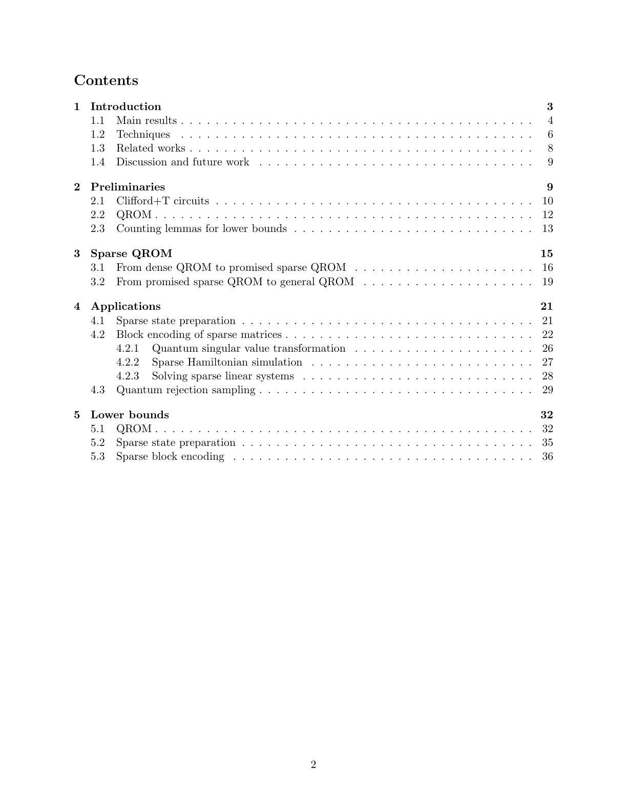
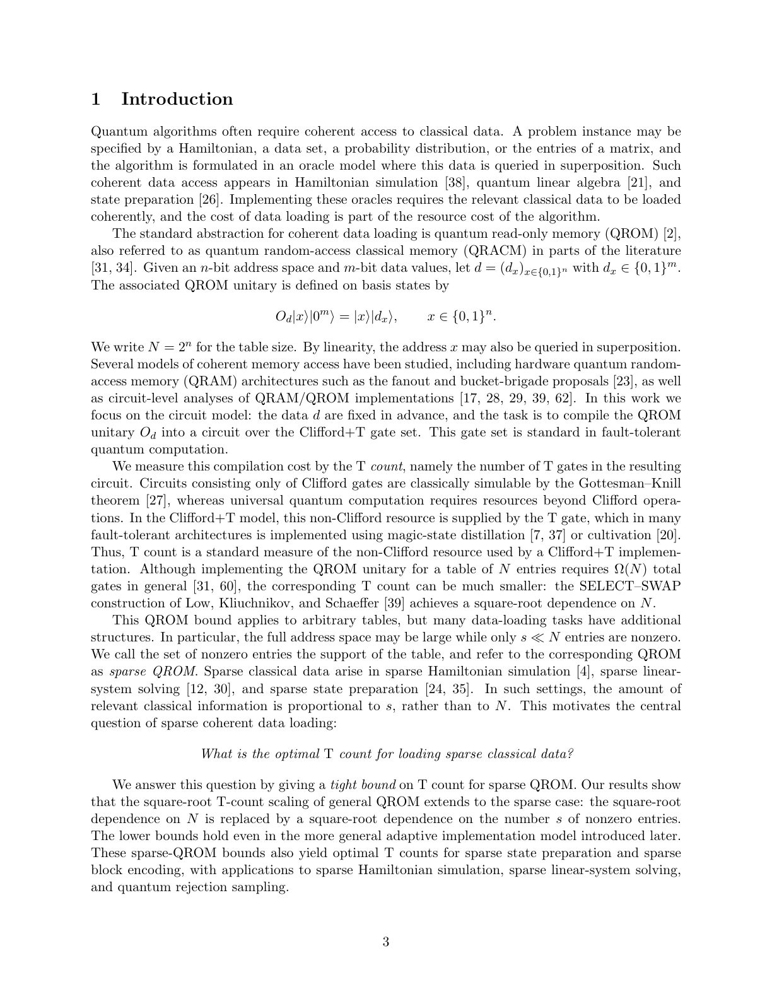
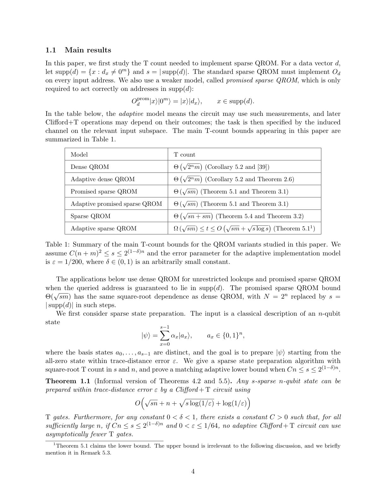
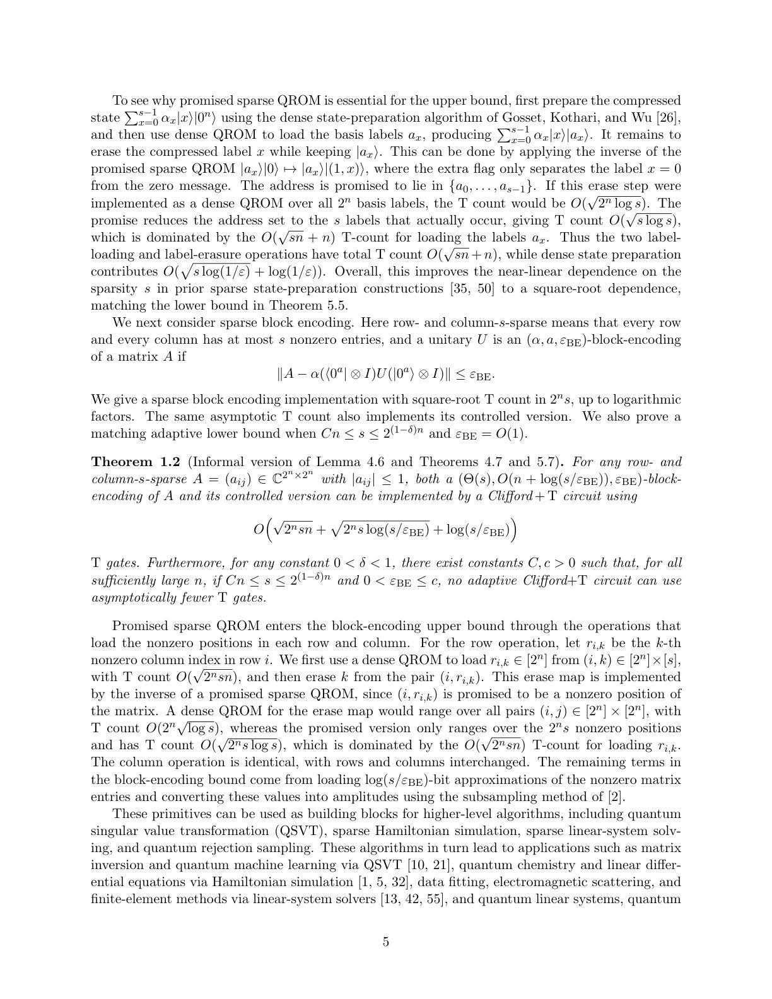
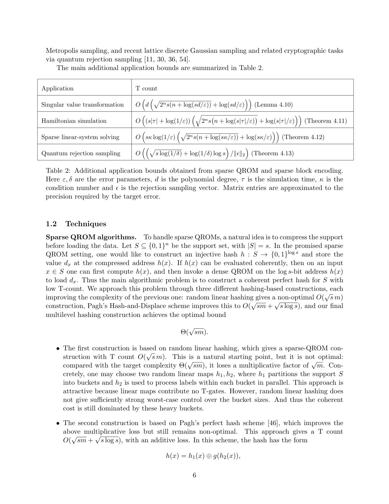
Summary. This paper rigorously determines the minimum number of T gates required for performing data-intensive tasks like QROM access and state preparation when the input data is sparse. By achieving optimal bounds scaling with $\sqrt{s}$ instead of $2^n$, it significantly improves theoretical estimates for quantum computation efficiency in memory-constrained regimes.
Why it may be interesting. While focused on abstract quantum complexity, the results provide fundamental resource estimates that underpin the feasibility of implementing complex algorithms (like those simulating physical systems) with limited gate sets.
Main problem. The paper determines the optimal resource cost, measured by T count, required for implementing coherent data access tasks like Quantum Read-Only Memory (QROM), sparse state preparation, and block encoding when the underlying classical data is sparse.
Main result. It establishes asymptotically optimal T-count bounds for these sparse tasks, showing a square-root dependence on the sparsity size $s$ rather than the full address space size $2^n$.
Method. The authors use circuit compilation analysis over the Clifford+T gate set, deriving upper bounds via multilevel hashing and lower bounds using counting arguments applied to adaptive Clifford+T circuits.
Model / system. The work analyzes quantum computation models utilizing the Clifford+T gate set. Key structures include QROMs, which are adapted for sparse data access ($s \ll 2^n$), alongside general state preparation and block encoding tasks for structured matrices.
Key observables. T count (the primary resource cost metric), circuit depth, and achievable complexity bounds.
Important parameters / regimes. Sparsity size $s$, address space parameter $n$ ($\log N$), data value bit length $m$, and precision parameters $\epsilon, \epsilon_{BE}$.
Assumptions / limitations. The analysis relies on specific regimes for sparsity ($Cn \le s \le 2(1-\delta)n$) and assumes the use of Clifford+T gates.
Figures summary. Not specified in detail, but Table 1 summarizes T-count bounds for various QROM variants, and Table 2 summarizes additional application bounds like QSVT.
Paper structure. The paper progresses by first establishing general sparse QROM bounds ($\Theta(\sqrt{sm} + \sqrt{sn})$), then deriving specific optimal constructions for sparse state preparation and block encoding, and finally proving matching lower bounds using adaptive circuit techniques.
Many quantum algorithms require coherent access to classical data, often modeled by quantum read-only memory (QROM). We initiate the study of the $T$ count of sparse QROM, in which only $s$ of the $2^n$ addresses store nonzero data. We prove asymptotically optimal $T$-count bounds $Θ(\sqrt{sm} + \sqrt{sn})$ with square-root dependence on the support size $s$ and message length $m$. Our upper bounds use a multilevel hashing scheme, while our lower bounds reduce sparse QROM to state preparation and use counting arguments for adaptive Clifford+$T$ circuits. The lower bounds thus hold even when mid-circuit measurements and classically controlled operations are allowed. As applications, we obtain matching $T$-count bounds $Θ(\sqrt{sn} + \sqrt{s\log(1/\varepsilon)} + \log(1/\varepsilon))$ for $s$-sparse state preparation and $Θ( \sqrt{2^n sn} + \sqrt{2^n s\log(s/\varepsilon_{\mathrm{BE}})} + \log(s/\varepsilon_{\mathrm{BE}}))$ for block encoding of $s$-sparse matrices, where $\varepsilon$ and $\varepsilon_{\mathrm{BE}}$ are the precision of state preparation and block encoding, respectively.
Authors: Susanta Das, Subhamoy Bhowmik, Zhen Li, Milana Bazayeva, Danil Kaliakin, Akhil Shajan, Kenneth M. Merz
Type: theory · Category: other · PDF: https://arxiv.org/pdf/2607.28548v1
Analysis basis: full PDF text, analyzed in chunks
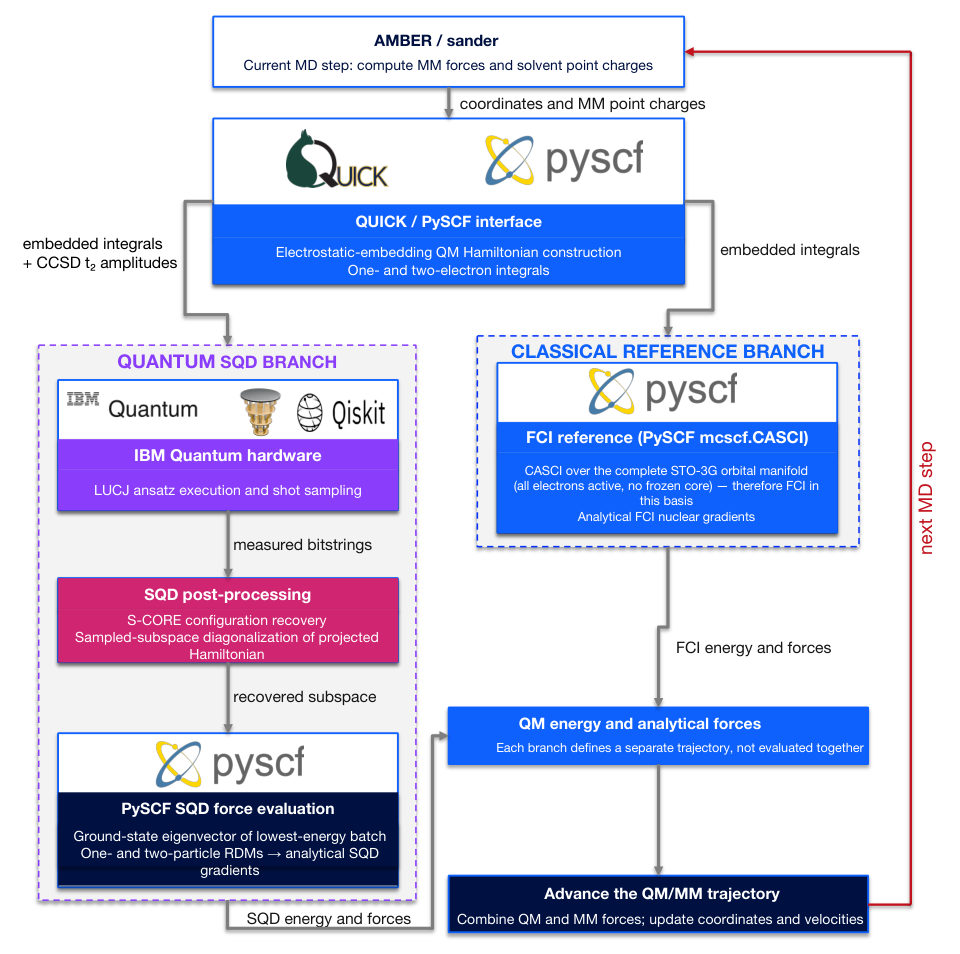
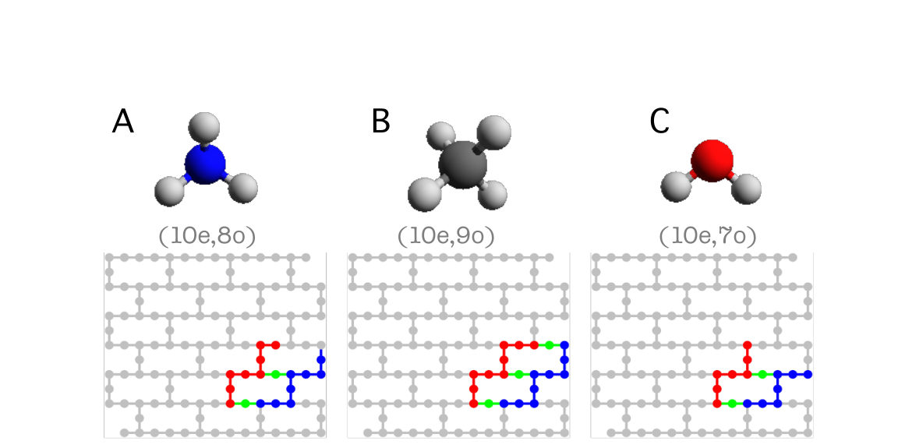
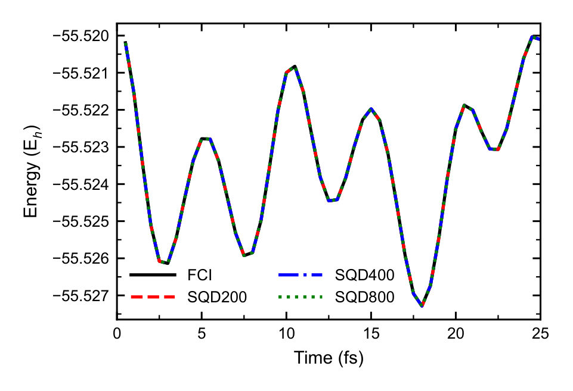
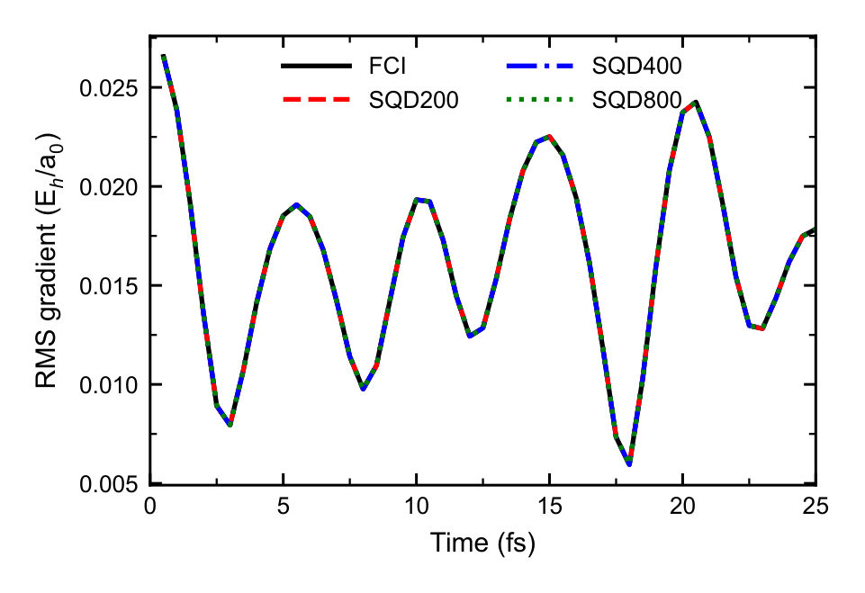
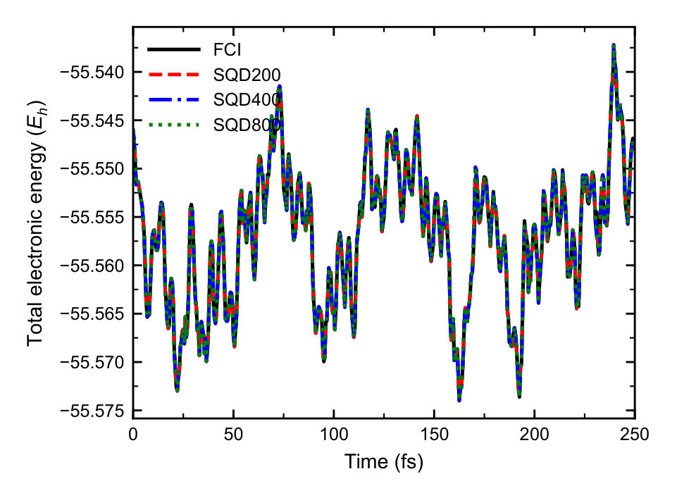
Summary. The paper presents a novel quantum-classical workflow using Sample-based Quantum Diagonalization (SQD) to enable ab initio molecular dynamics on current quantum hardware. By benchmarking against Full CI calculations in explicit solvents, the authors demonstrate that this method accurately predicts energies and forces for QM/MM systems. This establishes a practical pathway for integrating near-term quantum processors into computational chemistry simulations.
Why it may be interesting. This work is highly relevant as it tackles the direct application of near-term quantum computing (NISQ) devices to complex, time-dependent many-body problems in chemistry, bridging abstract quantum algorithms with tangible molecular dynamics simulations.
Main problem. The primary goal is establishing a practical workflow to integrate current quantum hardware into Quantum Mechanics/Molecular Mechanics (QM/MM) molecular dynamics simulations for condensed-phase systems.
Main result. The proposed LUCJ+SQD method successfully reproduces high-accuracy Full CI energies and gradients in both gas-phase benchmarks and explicit-solvent QM/MM simulations, validating its use on quantum hardware.
Method. It employs a quantum-classical workflow: quantum measurements from a LUCJ ansatz are post-processed using Sample-based Quantum Diagonalization (SQD) to estimate electronic structure properties, which are then combined with classical MM forces for dynamics.
Model / system. The simulations model neutral solutes ($ ext{NH}_3$, $ ext{CH}_4$, $ ext{H}_2 ext{O}$) embedded in explicit liquid water. The methodology combines quantum electronic structure calculations (via SQD) with classical force fields (QM/MM framework).
Key observables. Energies, analytical nuclear gradients, and solute–solvent radial distribution functions ($ ext{RDFs}$).
Important parameters / regimes. The benchmark accuracy is set by the Full CI calculation in the STO-3G basis; performance metrics include energy deviation ($\le 1 ext{ kcal mol}^{-1}$) and $ ext{RMS}$ gradient profile matching.
Assumptions / limitations. The method assumes that post-processing quantum measurements via SQD can accurately recover determinant subspaces, effectively bridging current noisy hardware capabilities to high-accuracy chemical simulations.
Figures summary. Figure 1 schematically illustrates the entire QM/MM AIMD workflow, showing parallel execution paths for both the 'QUANTUM SQD BRANCH' and the 'CLASSICAL REFERENCE BRANCH' at each MD step.
Paper structure. The paper details the quantum-classical integration pipeline: first, setting up the Hamiltonian construction (Quick/PySCF); second, executing the quantum measurement via LUCJ on hardware; third, post-processing these measurements using SQD to get energies/forces; and finally, integrating these forces into an established MD engine like Amber/sander.
We demonstrate a quantum-classical workflow for ab initio molecular dynamics (AIMD) in which quantum measurements from a chemistry-inspired LUCJ ansatz are post-processed using Sample-based Quantum Diagonalization (SQD) to recover determinant subspaces and deliver energies and analytical nuclear gradients for dynamics. As an exact benchmark, we use full configuration interaction (FCI) in the STO-3G basis, enabling a direct assessment of the accuracy of SQD. In gas-phase benchmarks, SQD reproduces FCI energies and gradients to within 1 kcal mol$^{-1}$ of the FCI reference and yields stable AIMD trajectories. In explicit-solvent QM/MM simulations, SQD retains this agreement, matching FCI energy fluctuations and RMS gradient profiles and reproducing solute-solvent structure as quantified by radial distribution functions. Overall, these benchmarks establish LUCJ+SQD as a practical route for integrating current quantum hardware into QM/MM molecular dynamics and provide an early demonstration of condensed-phase QM/MM dynamics driven by a quantum electronic-structure engine.
Authors: Suprava Sahoo, Abdul Kalam, Kenji Sugisaki, V. S. Prasannaa, B. P. Das
Type: theory · Category: other · PDF: https://arxiv.org/pdf/2607.27777v1
Analysis basis: full PDF text, analyzed in chunks
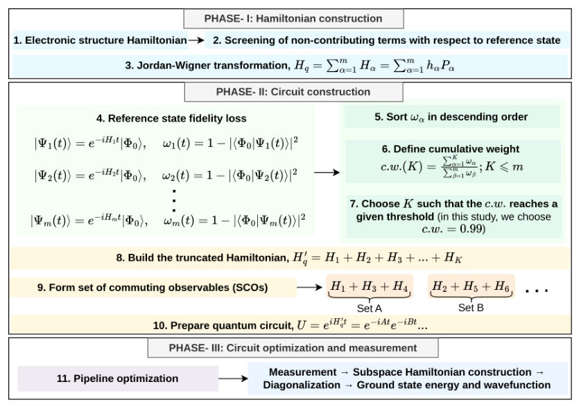
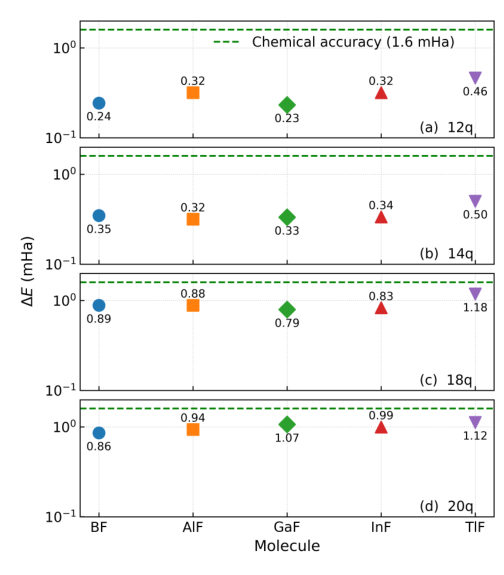
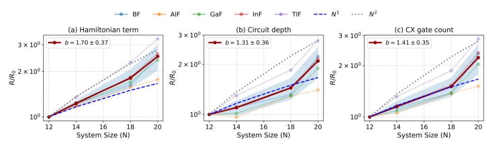
Summary. The paper introduces an $ ext{eos-QSCI}$ method to calculate molecular properties by drastically reducing the complexity of the electronic Hamiltonian. This is achieved by screening out negligible Pauli operator terms based on reference-state fidelity loss, leading to massive resource savings in circuit depth and gate counts compared to full methods. The results confirm that this approach enables accurate simulations for molecules like $ ext{TlF}$ on near-term quantum hardware.
Why it may be interesting. This work directly addresses the scalability bottleneck in quantum chemistry simulations. By providing a systematic way to compress the Hamiltonian before circuit construction, it makes calculations of molecular properties feasible on current noisy intermediate-scale quantum (NISQ) devices.
Main problem. The primary challenge is simulating quantum many-body systems, like molecules, for properties beyond ground-state energies while overcoming the exponential scaling limitations of exact electronic structure methods.
Main result. The proposed resource-efficient framework achieves near-quadratic improvements in Hamiltonian term scaling and demonstrates that calculations on NISQ devices maintain high accuracy (e.g., PDM matching within 99.99% of full CI).
Method. The authors developed an effective Pauli Operator Sorting-based Quantum-Selected Configuration Interaction ($ ext{eos-QSCI}$) method that prunes the Hamiltonian by retaining only dominant terms based on reference-state fidelity loss.
Model / system. The study applies this framework to Group IIIA monofluorides (BF, AlF, GaF, InF, TlF), using the Dirac–Coulomb Hamiltonian within the Born-Oppenheimer approximation for electronic structure calculations.
Key observables. Ground-state energies and Permanent Electric Dipole Moments (PDMs); quantum resource metrics include circuit depth and two-qubit gate counts.
Important parameters / regimes. The fidelity loss threshold ($c.w.(K) \gtrsim 0.99$) is used to construct the compact Hamiltonian; system sizes up to 20 qubits are tested.
Assumptions / limitations. The method relies on approximating the full electronic Hamiltonian by retaining only terms whose contribution, measured via reference-state fidelity loss, exceeds a certain threshold.
Figures summary. Figures illustrate the three phases of the $ ext{eos-QSCI}$ workflow: Hamiltonian construction (screening/Jordan-Wigner), time-evolution circuit building using Sets of Commuting Observables (SCOs), and hardware execution results. Tables quantify resource reductions ($ ext{HT}$, $ ext{CD}$, $ ext{CX}$) compared to full methods.
Paper structure. The paper details the problem (FCI intractability), introduces the $ ext{eos-QSCI}$ methodology through Hamiltonian screening and importance selection based on fidelity loss, presents resource scaling analyses showing super-linear advantages over full Hamiltonians, and validates the approach by calculating energies and PDMs for several Group IIIA monofluorides on simulated quantum hardware.
The quantum-selected configuration interaction identifies important determinantal basis functions through real-time evolution of a reference wavefunction and diagonalizing the Hamiltonian matrix in the resulting selected subspace. However, implementing the full electronic Hamiltonian on noisy quantum devices leads to rapidly increasing circuit complexity, limiting its scalability. To address this issue, we identify the dominant fermionic excitation operators and perform reference-state fidelity loss analysis to construct a compact Hamiltonian, reducing computational overhead while retaining high precision. Applied to Group IIIA monofluorides (BF, AlF, GaF, InF, and TlF), the proposed framework achieves a near-quadratic improvement in Hamiltonian-term scaling, enabling resource-efficient simulations. We employ this framework to compute the relativistic ground-state energies and permanent electric dipole moments (PDMs) of the systems under consideration. After validating the framework via simulations, we demonstrate hardware execution for AlF and TlF on the IBM Marrakesh processor using active spaces of up to 20 qubits. For a 20-qubit TlF system, the reduced Hamiltonian yields a reduction of higher than $ 98\%$ in both circuit depth and two-qubit gate counts, with the resulting PDMs from quantum hardware matching complete active space configuration interaction values within $99.99\%$. These results demonstrate the scalability of this approach on noisy intermediate-scale quantum devices.
Authors: Misaki Sasaki, Zhehong Liu, Takeshi Hara, Shunsuke Kitou, Markus Kriener, Haruto Yoshimochi, Shion Yamada, Chieko Terakura, Naohisa Hirao, Hirokazu Kadobayashi, Yusuke Wakabayashi, Yoshinori Tokura, Yasujiro Taguchi, Taka-hisa Arima, Yukako Fujishiro
Type: experiment · Category: strongly correlated electrons · PDF: https://arxiv.org/pdf/2607.27607v1
Analysis basis: full PDF text, analyzed in chunks
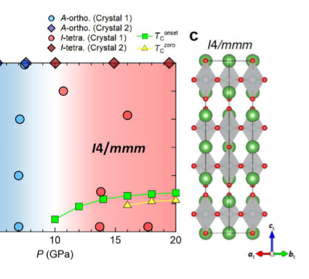
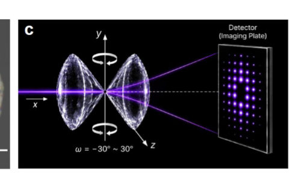
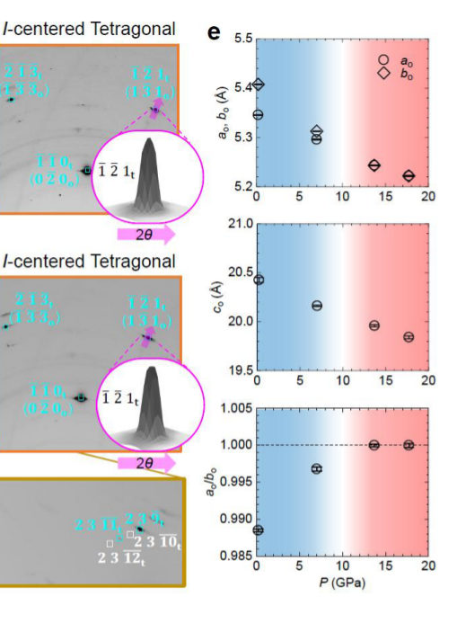
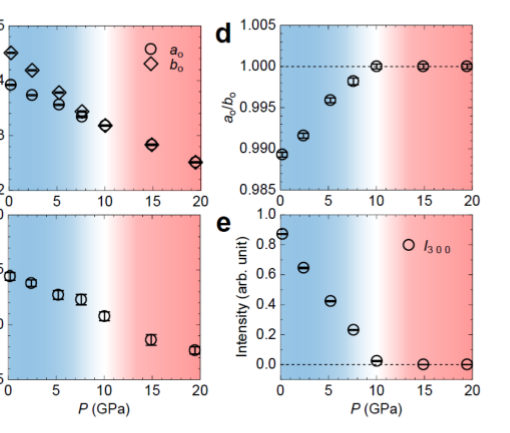
Summary. This experimental study maps the structural phase diagram of bilayer nickelate La3Ni2O7 under high pressure using single-crystal X-ray diffraction. It definitively shows that superconductivity emerges precisely when the crystal structure undergoes a transition from an ambient orthorhombic phase to a tetragonal I4/mmm phase near 10 GPa. These findings provide crucial structural constraints for developing microscopic theories of nickelate superconductivity.
Why it may be interesting. The work directly probes the interplay between crystal symmetry breaking (structural phase transitions) and unconventional superconductivity in a strongly correlated nickelate material, which is highly relevant to understanding pairing mechanisms in cuprates and related systems.
Main problem. The study aims to establish the definitive pressure-temperature phase diagram of stoichiometric bilayer nickelate La3Ni2O7 to resolve structural controversies complicating efforts to understand its microscopic origin of superconductivity.
Main result. A direct structural transition is observed from a polar orthorhombic Am2m phase at ambient pressure to a tetragonal I4/mmm phase near 10 GPa, which coincides with the onset of bulk superconductivity.
Method. High-pressure single-crystal X-ray diffraction measurements were performed using a Diamond Anvil Cell (DAC) under hydrostatic conditions with helium as the pressure medium.
Model / system. The physical system is stoichiometric bilayer nickelate La3Ni2O7. The investigation tracks structural changes, including octahedral tilting patterns and charge order, across varying pressures and temperatures.
Key observables. Crystal structure symmetry (Am2m vs I4/mmm), lattice parameters, and the appearance/disappearance of specific X-ray reflections ($h=2n+1$).
Important parameters / regimes. Pressure (up to 17.7 GPa) and Temperature (low T measurements at 9 K). The superconducting transition occurs near 10 GPa.
Assumptions / limitations. The use of single, stoichiometric crystals under strictly hydrostatic conditions is assumed to provide a definitive structural picture, ruling out previous conflicting models.
Figures summary. Figures detail the pressure-temperature phase diagram showing superconductivity onset and diffraction patterns illustrating the orthorhombic to tetragonal symmetry change across the critical pressure region.
Paper structure. The paper establishes the experimental methodology using DAC/XRD on single crystals, presents evidence for the ambient $ ext{Am}2 ext{m}$ structure, maps out the structural transition ($ ext{Am}2 ext{m} o ext{I}4/ ext{mmm}$) coinciding with superconductivity onset, and concludes by providing a structural framework for theory.
The bilayer nickelate La3Ni2O7 has attracted intense interest following the discovery of high-temperature superconductivity under pressure, representing the first nickelate superconductor realized in bulk form. However, the crystal structure of the superconducting phase remains under active discussion, complicating efforts to establish its microscopic origin. Here we resolve these structural controversies by establishing a definitive pressure-temperature phase diagram, including the superconducting region of stoichiometric La3Ni2O7 single crystals under hydrostatic conditions using helium as the pressure-transmitting medium. At ambient pressure, La3Ni2O7 adopts a polar orthorhombic Am2m structure characterized by charge order between inequivalent Ni sites and NiO6 octahedral tilting. Upon compression, the system undergoes a direct transition from the charge-ordered Am2m phase to the tetragonal I4/mmm phase near 10 GPa, coinciding with the onset of bulk superconductivity. These results establish the intrinsic structural evolution of La3Ni2O7 and provide a structural framework for microscopic theories of nickelate superconductivity.
Authors: Gian Luca Spitzer
Type: theory · Category: other · PDF: https://arxiv.org/pdf/2607.28024v1
Analysis basis: full PDF text, analyzed in chunks
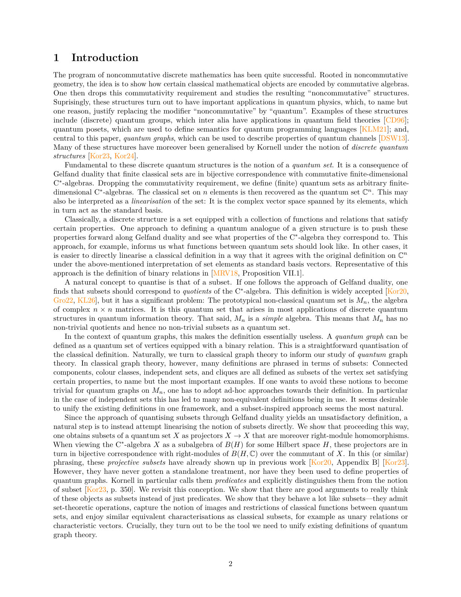
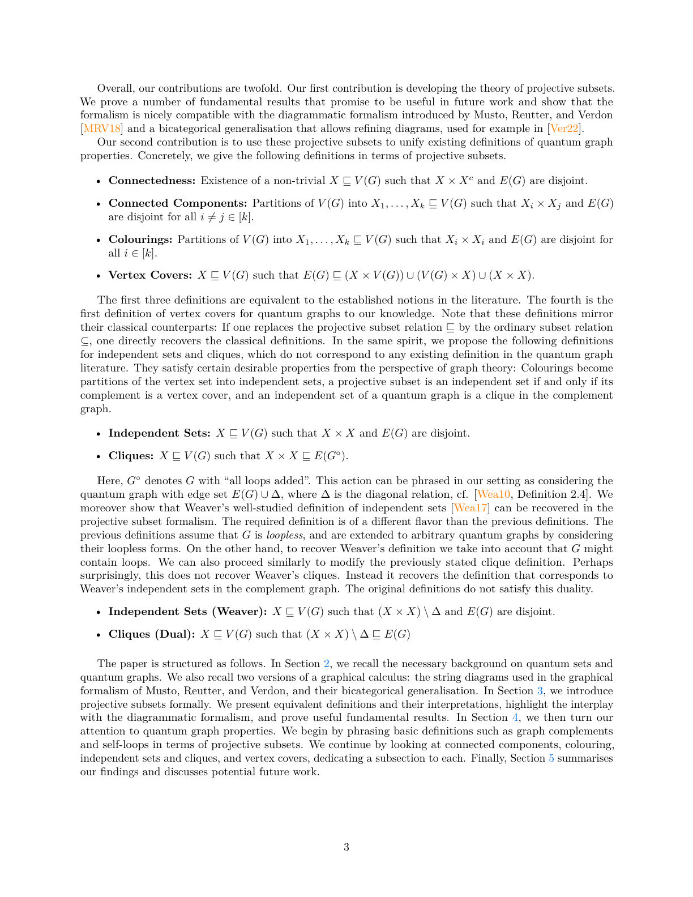
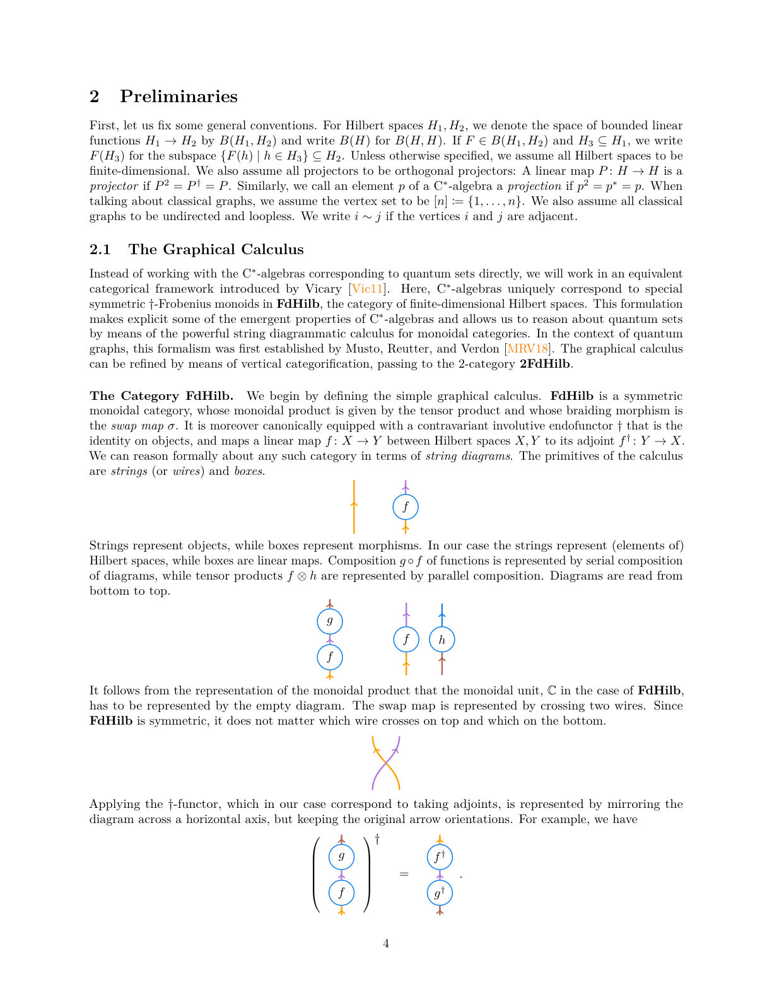
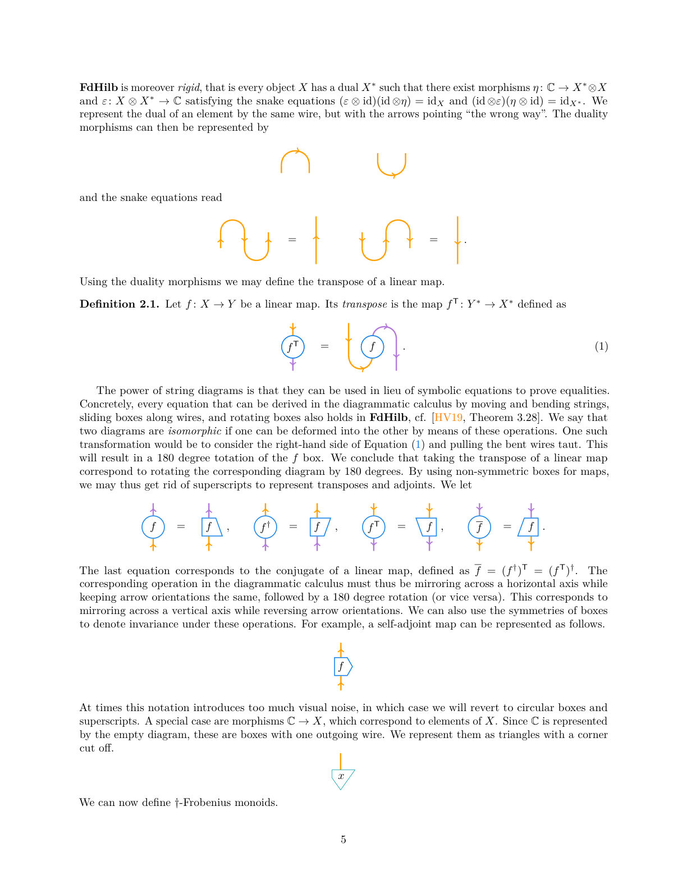
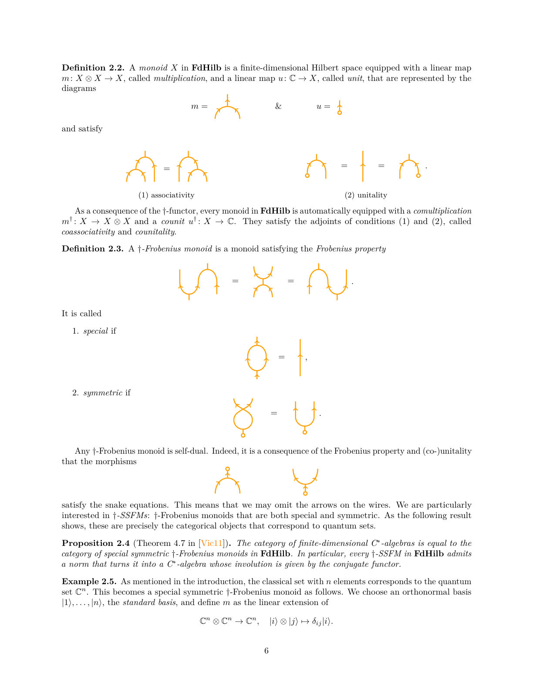
Summary. This paper tackles the challenge of defining graph properties on quantum graphs by proposing a novel mathematical structure called 'Projective Subsets.' This formalism overcomes the limitations of standard set theory in the quantum setting, allowing the authors to unify definitions for concepts like independent sets and connected components. It provides a deep theoretical tool for extending classical combinatorics into non-commutative quantum structures.
Why it may be interesting. While highly abstract, developing robust mathematical frameworks for generalizing classical combinatorial structures (like connectivity or independence) into quantum settings is foundational for understanding quantum information geometry and topological quantum field theories.
Main problem. The core problem is developing a mathematically rigorous way to generalize classical graph properties (like independent sets or connected components) from standard graphs to quantum graphs.
Main result. The authors introduce 'Projective Subsets' as a necessary alternative definition for subsets of a quantum set, allowing for unified definitions of quantum graph properties that recover known results while suggesting novel variations for others.
Method. The approach relies on advanced mathematical tools, including the theory of $\text{C}^*$-algebras, projective modules, and categorical methods (specifically using 2-categories) to formalize set operations in a non-commutative setting.
Model / system. The model is the 'Quantum Graph,' whose structure is mathematically encoded using finite-dimensional $\text{C}^*$-algebras or their equivalent representation via $\dagger$-Frobenius monoids ($\dagger$-SFMs).
Key observables. Connected components, colorings, independent sets, cliques, and vertex covers.
Important parameters / regimes. The analysis is initially restricted to the finite-dimensional case ($\text{FdHilb}$), with potential generalization to infinite dimensions using von Neumann algebras.
Assumptions / limitations. The standard definition of subsets based on Gelfand duality fails for simple quantum sets like $M_n$, necessitating the projective subset formalism.
Paper structure. The paper first identifies the failure of direct generalization, proposes the Projective Subset formalism ($\text{X} \sqsubseteq \text{V}(\text{G})$), and then uses this framework to propose unified definitions for various graph properties, comparing them against existing literature.
Many properties of classical graphs are defined in terms of subsets of the vertex set. Examples include connected components, which are subsets $X \subseteq V(G)$ such that $X \times X^c$ and $E(G)$ are disjoint, or independent sets, for which $X \times X$ and $E(G)$ are disjoint. Direct generalisations of these definitions to quantum graphs are difficult to achieve, since the natural notion of subsets of a quantum set is much too rigid. As a consequence, approaches to generalising these classical properties to the quantum setting have been eclectic. In some cases, multiple inequivalent definitions of the same notion are in use. We introduce a natural and well-motivated alternative definition of subsets of a quantum set. Building on this, we propose unified definitions of quantum graph properties as straightforward generalisations of the classical definitions. We recover this way the established notions of colourings and connected components. For independent sets and cliques, our approach suggests variations that diverge from existing definitions, but address some of their counterintuitive properties. We nevertheless show how to recover an important existing definition of independent sets in our framework.
Papers from cond-mat.mtrl-sci, mes-hall, other, soft, supr-con. These archives are de-prioritized — they appear at the end regardless of relevance score.
Authors: Takayuki Shiino, Matteo Fettizio, Weronika Janus, Can Onur Avci
Type: both · Category: other · PDF: https://arxiv.org/pdf/2607.27848v1
Analysis basis: full PDF text, analyzed in chunks
Topic relevance: 🔥 analog quantum simulation 4/5 · 🔥 driven-dissipative phase transition 4/5 · 🔥 non-equilibrium universality 4/5 · exotic spin models in light-matter 3/5 · non-equilibrium dynamics 3/5 · spintronics-quantum-optics interface 3/5 · Frenkel-Kontorova 2/5 · methods for driven-dissipative 2/5 · Keldysh / 2PI / non-Gaussian methods 1/5 · correlated / nonlocal dissipation 1/5
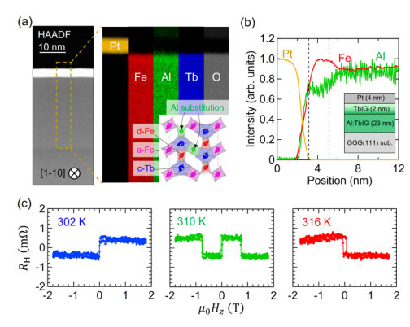
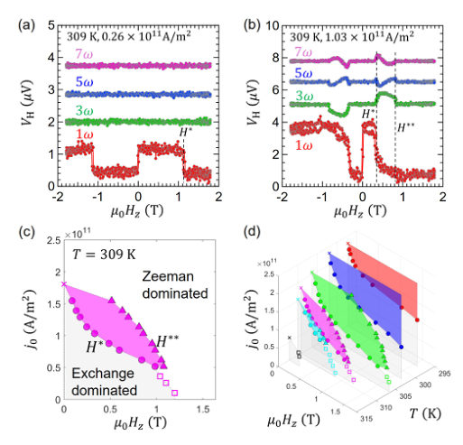
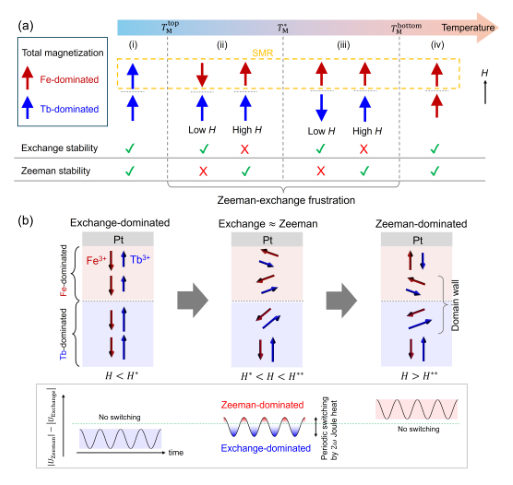
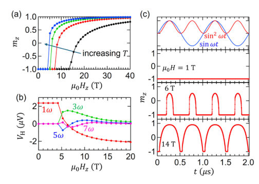
Summary. This work demonstrates that in ferrimagnetic insulators exhibiting Zeeman-exchange frustration, Joule heating can parametrically drive the magnetization through unstable spin-flip regimes. This process converts a weak thermal fluctuation into a giant nonlinear electrical signal characterized by large odd harmonic voltages, opening new avenues for controlling magnetotransport via thermal effects.
Why it may be interesting. The mechanism relies on non-equilibrium thermodynamics (Joule heating) driving a system through a critical point (frustration/compensation), leading to macroscopic nonlinear response, which is relevant for understanding driven quantum or classical many-body systems near phase transitions.
Main problem. The study investigates how Zeeman-exchange frustration can convert a weak thermal perturbation into a large nonlinear electrical response in magnetic heterostructures.
Main result. Large, higher-order odd harmonic voltages are generated when the system is driven through a spin-flip transition regime by Joule heating, demonstrating a novel route for nonlinear magnetotransport.
Method. The research combines experimental measurements of harmonic Hall voltage with advanced macrospin-chain simulations incorporating thermal modulation effects.
Model / system. The physical platform is an Al:TbIG/Pt bilayer exhibiting compositional gradients. The model uses a 1D chain of coupled spins governed by effective fields including exchange, anisotropy, and Zeeman terms.
Key observables. Odd-order harmonic Hall voltages ($V_{3\omega}^H, V_{5\omega}^H, V_{7\omega}^H$), spin-flip transitions, and the field/temperature dependence of these harmonics.
Important parameters / regimes. Zeeman-exchange frustration regime, magnetic compensation point, current density (driving Joule heating), and temperature ($T$).
Assumptions / limitations. The nonlinear response is primarily driven by parametric modulation induced by Joule heating causing periodic switching between competing magnetic states, rather than just spin-orbit torque effects.
Figures summary. Figures show structural gradients via STEM/EELS; transport measurements reveal large odd harmonics confined to a specific field window when current density increases; simulations confirm these harmonics arise from thermal modulation driving magnetization switching across stability boundaries.
Paper structure. The paper establishes the physical system and the problem of nonlinearity. It presents experimental evidence showing large odd harmonics, which are then theoretically explained by macrospin-chain simulations that explicitly model Joule heating as the parametric drive causing periodic magnetic state switching.
Competing magnetic interactions can create metastable or unstable states and render magnetic systems highly susceptible to external perturbations. Here we show that Zeeman-exchange frustration in an Al-substituted terbium iron garnet with a compositional gradient across its thickness gives rise to a giant nonlinear Hall response in an adjacent Pt layer. Near magnetic compensation, a field-induced spin-flip transition is accompanied by unusually large higher-order odd harmonic voltages, with the third, fifth, and seventh harmonics reaching amplitudes comparable to that of the first harmonic. The field, temperature, and current dependences collectively identify Joule heating as the parametric drive of the harmonic response. Macrospin-chain simulations further show that current-induced thermal modulation periodically switches the interfacial Fe magnetization between exchange- and Zeeman-dominated states and reproduces the observed harmonic signals. These results demonstrate how frustration can convert a weak thermal perturbation into a large nonlinear electrical response, providing a route to nonlinear magnetotransport in compensated ferrimagnets.
Authors: Rohma Khan, Kang Xu, Nathaniel Jeffries, Ankit Bhardwaj, Boya Radha, Daniela Pagliero, Carlos A. Meriles
Type: both · Category: statistical mechanics · PDF: https://arxiv.org/pdf/2607.28480v1
Analysis basis: full PDF text, analyzed in chunks
Topic relevance: 🔥 exotic spin models in light-matter 4/5 · methods for driven-dissipative 3/5 · quantum measurements 3/5 · spintronics-quantum-optics interface 3/5 · Keldysh / 2PI / non-Gaussian methods 2/5 · QC/QI experiment 2/5 · driven-dissipative phase transition 2/5 · non-equilibrium dynamics 2/5 · Kondo & dissipative impurity 1/5 · analog quantum simulation 1/5 · correlated / nonlocal dissipation 1/5 · non-equilibrium universality 1/5
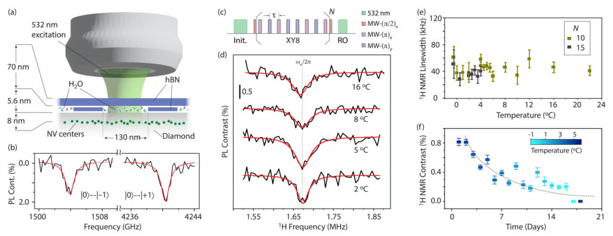
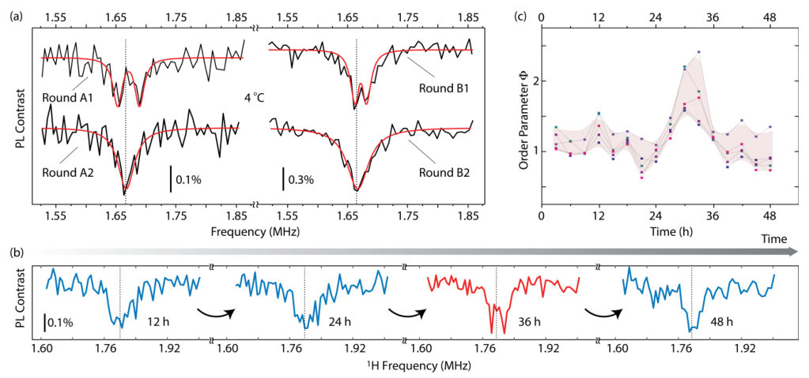
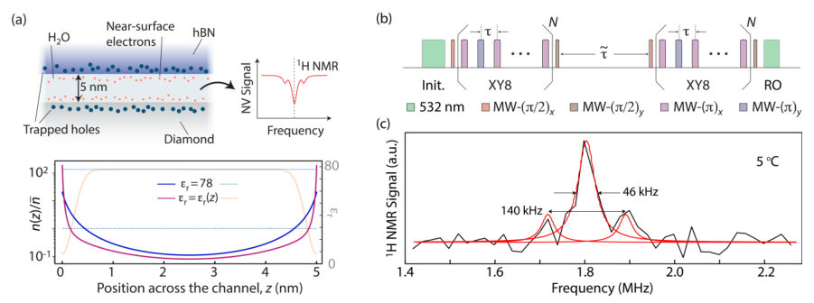
Summary. This paper uses NV-NMR spectroscopy on nanoconfined water to observe a transient, resolved proton doublet, indicating unusual spin order. The authors develop a theoretical model based on minimizing free energy to explain this state as arising from extended, correlated charge-hydration complexes. It provides insights into the complex interplay between confinement, electrostatics, and liquid structure at the nanoscale.
Why it may be interesting. The work bridges quantum sensing (NV-NMR) with complex many-body physics in confined liquids, providing insights into non-equilibrium structural phases stabilized by electrostatics and hydrogen bonding.
Main problem. The study investigates the unusual spin order observed in water confined to nanometer channels, aiming to understand the interplay between local electric fields, charge accumulation, and molecular mobility.
Main result. The intermittent appearance of a resolved proton doublet suggests a metastable state involving a spatially extended, correlated population of charge-hydration complexes within the liquid.
Method. The research combines NV-NMR spectroscopy measurements with theoretical modeling that minimizes a Helmholtz free energy functional to predict equilibrium charge profiles.
Model / system. The system is water confined in $\sim 5.6$ nm channels, probed using NV-NMR. The model treats the liquid as a slab where mobile paramagnetic charges interact electrostatically and are constrained by hydration penalties.
Key observables. Proton NMR linewidth (diffusivity), appearance/evolution of a resolved doublet splitting ($\sim 30 ext{ kHz}$), and the order parameter tracking spectral changes over hours.
Important parameters / regimes. Temperature dependence, confinement width ($5.6 ext{ nm}$), hyperfine coupling strength, and timescales ranging from microseconds to hours.
Assumptions / limitations. The model assumes translational invariance laterally and that the system can be described by minimizing a Helmholtz free energy functional incorporating electrostatic and hydration terms.
Figures summary. Figures show temperature-controlled setups, ODMR spectra, ${}^1 ext{H}$ NMR spectra demonstrating linewidth suppression and doublet formation, and time evolution plots tracking the order parameter $\Phi$.
Paper structure. The paper progresses from initial experimental observations of suppressed dynamics to identifying the transient doublet feature. It then develops a theoretical framework using free energy minimization to model the charge distribution responsible for this spin ordering.
Liquids confined to nanometer-scale geometries exhibit behavior that departs markedly from their bulk counterparts, yet studying their dynamics under controlled conditions remains experimentally challenging. Here, we use nitrogen-vacancy (NV) center nuclear magnetic resonance (NMR) spectroscopy to probe water confined in 5.6 nm channels as a function of temperature. The system remains liquid throughout the investigated temperature range and exhibits strongly suppressed diffusivity, enabling direct detection of its 1H NMR spectrum. Occasionally, the proton resonance transforms into a doublet with a splitting of several tens of kilohertz, which we tentatively attribute to hyperfine interactions mediated by long-lived paramagnetic charge complexes, in turn seeded by solvated electrons optically injected during laser illumination. The intermittent appearance of this feature suggests a metastable state comprising a correlated population of charge-hydration complexes extending throughout the confined liquid.
Authors: Di Zhu, Zhongbo Yan, Mohsen Yarmohammadi
Type: theory · Category: other · PDF: https://arxiv.org/pdf/2607.27335v1
Analysis basis: full PDF text, analyzed in chunks
Topic relevance: 🔥 non-equilibrium dynamics 4/5 · analog quantum simulation 3/5 · exotic spin models in light-matter 3/5 · spintronics-quantum-optics interface 3/5 · driven-dissipative phase transition 2/5 · methods for driven-dissipative 2/5 · Keldysh / 2PI / non-Gaussian methods 1/5 · non-equilibrium universality 1/5
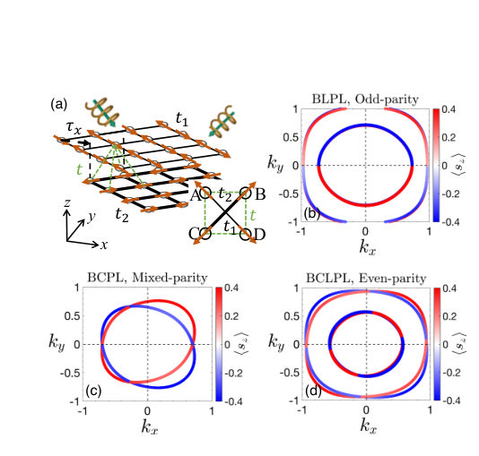
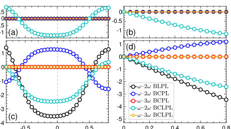
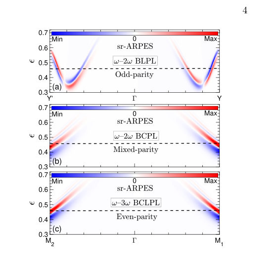
Summary. The paper demonstrates that applying bichromatic light fields ($\omega - n\omega$) to a coplanar antiferromagnet allows researchers to overcome inherent crystal symmetry restrictions on spin-splitting parity. By tuning the driving frequency ratio ($n$), one can deterministically generate odd, mixed, or even spin textures, which are confirmed by measurable transport signatures like quench-induced spin currents.
Why it may be interesting. This work directly addresses how external time-periodic driving fields can be used as a quantum control knob to engineer fundamental symmetries and electronic properties in condensed matter systems, which is highly relevant for topological materials and spintronics.
Main problem. The primary challenge is overcoming the intrinsic crystal symmetry limitations that restrict spin-splitting parity in antiferromagnets (AFMs) to only even or odd values.
Main result. Bichromatic Floquet driving ($\omega - n\omega$) provides a mechanism to deterministically control the spin-splitting parity, generating tunable odd-, mixed-, and even-parity states impossible with static or monochromatic fields.
Method. The analysis uses Floquet theory applied to a tight-binding Hamiltonian under bichromatic time-dependent potentials, deriving an effective time-independent Hamiltonian in the high-frequency limit.
Model / system. The system is a coplanar Antiferromagnet (BCAFM) realized in engineered 2D heterostructures. The physics is modeled using a tight-binding Hamiltonian subjected to bichromatic driving fields ($\omega - n\omega$).
Key observables. Spin-splitting parity (Odd, Even, Mixed), macroscopic spin currents ($J_{s x}, J_{s y}$), and momentum-resolved spin polarization measured via ARPES.
Important parameters / regimes. The harmonic number $n$ of the driving field, and the relative amplitudes/polarizations of the two driving frequencies ($\omega$ and $2\omega$).
Assumptions / limitations. The analysis relies on the high-frequency off-resonant Floquet approximation, truncating the Hamiltonian expansion at specific orders in $\omega^{-1}$ or $\omega^{-2}$.
Figures summary. Figures schematically illustrate momentum-resolved spin polarization ($\langle s_z angle$) for different driving protocols (BLPL, BCPL, BCLPL) and harmonics ($n=2$), showing distinct parity outcomes.
Paper structure. The paper systematically derives the effective Floquet Hamiltonian by expanding the time-dependent lattice Hamiltonian using Peierls substitution. It then analyzes this effective Hamiltonian for various bichromatic polarization states (BLPL, BCPL, BCLPL) to map out the resulting spin-splitting parity based on the harmonic number $n$.
Parity is a central characteristic of momentum-dependent spin splitting in antiferromagnets (AFMs). Yet, intrinsic crystal symmetries typically restrict the splitting to either even or odd parity, preventing flexible spin control. Using a coplanar AFM, we demonstrate that bichromatic ($ω$--$nω$) Floquet driving offers a natural way to bypass this constraint. This mechanism generates asymmetric spin textures unattainable in static AFMs or under monochromatic driving. For the specific AFM considered here, we reveal an elegant relation between spin-splitting parity and harmonic hierarchy: $ω$--$2ω$ fields generate highly tunable odd- and mixed-parity spin splittings, whereas higher-order harmonics ($n \ge 3$) exclusively produce even-parity states. The macroscopic magnetization can also be toggled via the specific driving protocol and harmonic $n$. These distinct spin splitting states manifest in qualitatively different macroscopic spin currents generated after an optical quench---a definitive transport signature complementing direct visualization via spin- and angle-resolved photoemission spectroscopy.
Authors: Alexandre Guillet, Frank Jülicher
Type: theory · Category: statistical mechanics · PDF: https://arxiv.org/pdf/2607.27402v1
Analysis basis: full PDF text, analyzed in chunks
Topic relevance: 🔥 non-equilibrium universality 4/5 · driven-dissipative phase transition 3/5 · non-equilibrium dynamics 3/5 · analog quantum simulation 2/5 · methods for driven-dissipative 2/5 · Frenkel-Kontorova 1/5 · Keldysh / 2PI / non-Gaussian methods 1/5 · correlated / nonlocal dissipation 1/5 · entanglement & information structure 1/5
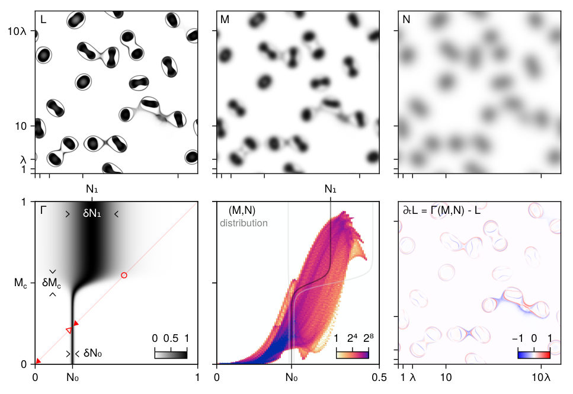
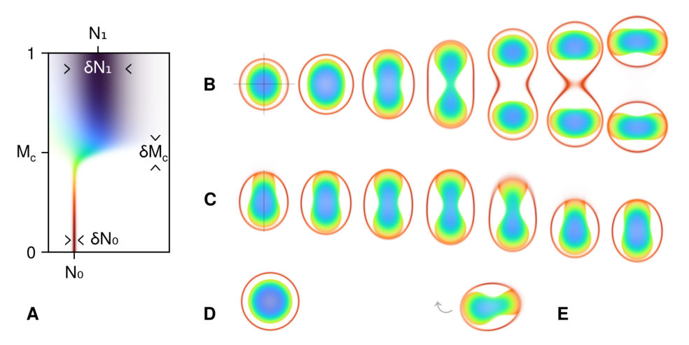
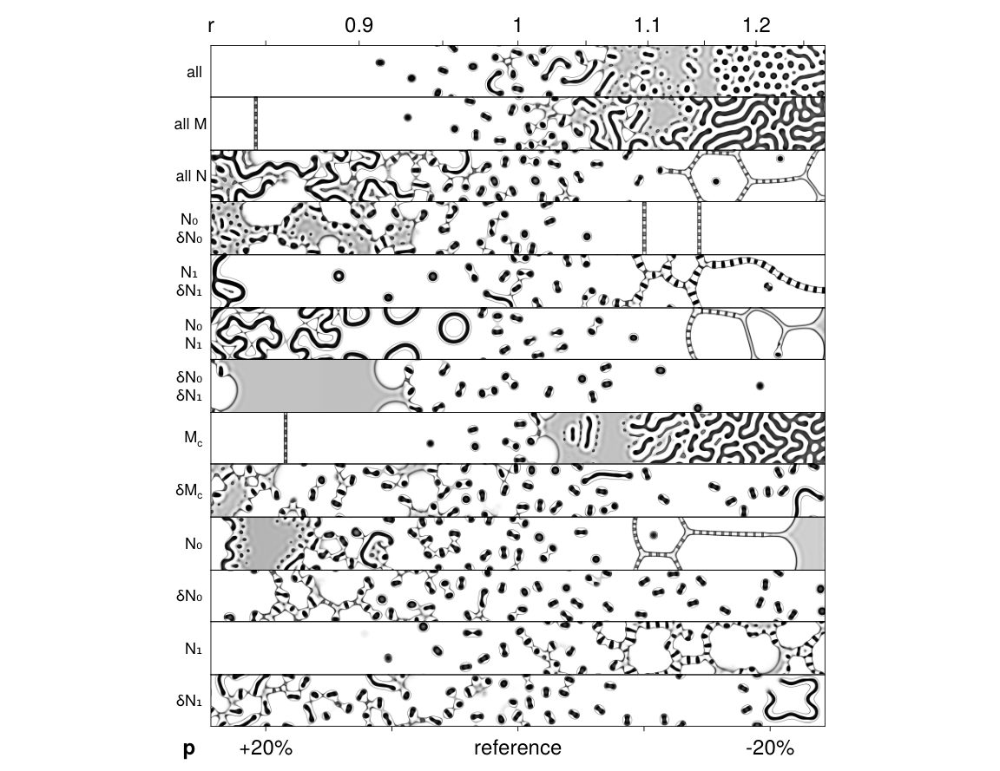
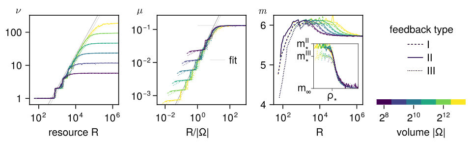
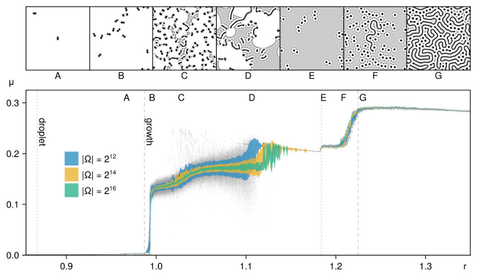
Summary. This paper develops a continuous mathematical model for Conway's Game of Life to study how simple rules can generate life-like patterns. By introducing resource limitations, the system is forced into an 'edge of growth' regime where self-organization occurs. It provides a powerful, mathematically concise framework for modeling pattern emergence in non-equilibrium physical systems.
Why it may be interesting. While focused on classical pattern formation, the use of non-equilibrium dynamics, phase transitions (dilute-to-dense), and self-organization principles resonates with understanding critical phenomena in complex quantum many-body systems or open quantum systems far from equilibrium.
Main problem. The study investigates cell emergence and self-organization by translating Conway's Game of Life into a continuous, reaction-diffusion framework.
Main result. The model successfully generates complex, life-like morphologies (self-replicating, gliding cells) whose organization is driven toward an 'edge of growth' boundary via global resource limitation.
Method. The dynamics are modeled using partial integro-differential equations and interpreted as a coarse-grained reaction-diffusion system governed by morphogen concentrations.
Model / system. The Continuous Game of Life (cGoL) model uses Gaussian kernels to approximate neighborhood interactions, mapping the discrete rules onto continuous fields ($L$, $M$, $N$). The dynamics are driven by nonlinear survival rules and constrained by a global resource conservation law.
Key observables. Self-replicating/gliding cell patterns, homogeneous-state bifurcations, symmetry breaking, shape instabilities, and the dilute-to-dense transition (edge of growth).
Important parameters / regimes. The system is controlled by multiple parameters defining the Gaussian kernels and the target function $\Gamma$, with resource availability acting as a critical global constraint.
Assumptions / limitations. The primary assumption is that the complex discrete rules can be accurately approximated by continuous, smooth reaction-diffusion dynamics; the analysis also assumes the existence of a governing global conservation law for resources.
Figures summary. Figures illustrate the primary and auxiliary fields ($L, M, N$), the target function $\Gamma$, spatial distributions of $(M, N)$ pairs, and visual examples of cell dynamics like division and gliding at reference parameters.
Paper structure. The paper progresses from defining the continuous model via precursor studies (SmoothLife) to analyzing its steady states and bifurcations. It then introduces resource feedback to define the 'edge of growth' regime, culminating in a discussion of advanced stability analysis techniques.
Conway's Game of Life shows that simple rules can generate a rich diversity of emerging structures. This cellular automaton has been translated to continuous space by Rafler (2011) in a simulation called SmoothLife. The isotropic rule of this continuous Game of Life generates patterns whose beauty has attracted the attention of a growing community at the intersection of science and computer art. We study a minimal variant of this model, continuous in space and time, that generates cell-like patterns capable of self-replicating, gliding and disappearing. The phenomenology of these unit patterns is reported and related to homogeneous-state bifurcations, symmetry breaking, observed shape instabilities, finite-amplitude morphological changes, and a dilute-to-dense transition associated with cell proliferation. Its mapping onto a large reaction--diffusion system is interpreted in terms of homeostatic concentrations of morphogens, regulated by the nonlinear survival rule and generated through a cell-sourced cascade of auxiliary reactions. Introducing a global conservation law that limits resource availability causes the system to self-organize at this dilute-to-dense transition, which we call the edge of growth. A further exploration of parameter space reveals a variety of phases and the richness of life-like morphologies organized around this edge. Resemblance to biological processes such as division, motility, and death, together with a concise formulation and numerical implementation, makes the continuous Game of Life an appealing model system for investigating the emergence and self-organization of life-like patterns.
Authors: Poonam Kumari, Alberto Zobelli, Igor de Melo Froldi, Adeline Crepieux, Laurent Simon, Cristina Bena
Type: theory · Category: disordered systems and neural networks · PDF: https://arxiv.org/pdf/2607.28296v1
Analysis basis: full PDF text, analyzed in chunks
Topic relevance: 🔥 methods for driven-dissipative 4/5 · Keldysh / 2PI / non-Gaussian methods 3/5 · Kondo & dissipative impurity 3/5 · non-equilibrium dynamics 2/5 · correlated / nonlocal dissipation 1/5 · driven-dissipative phase transition 1/5
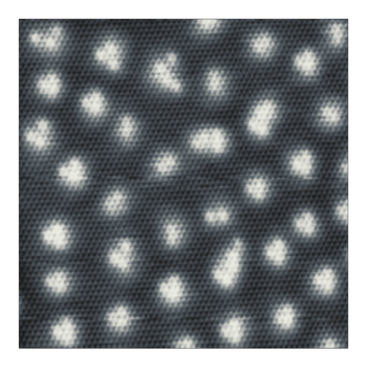
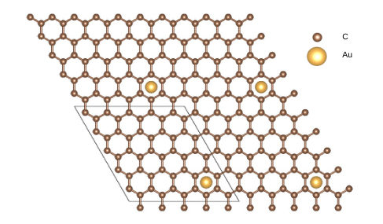
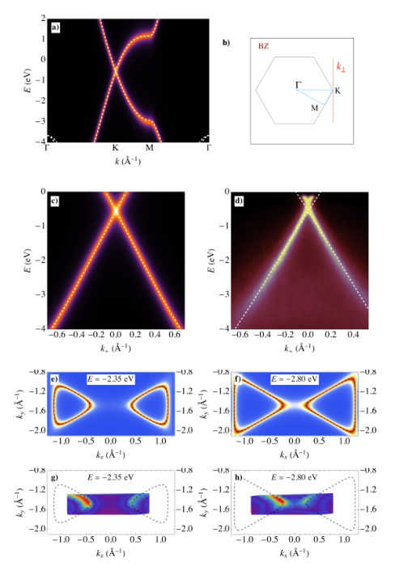
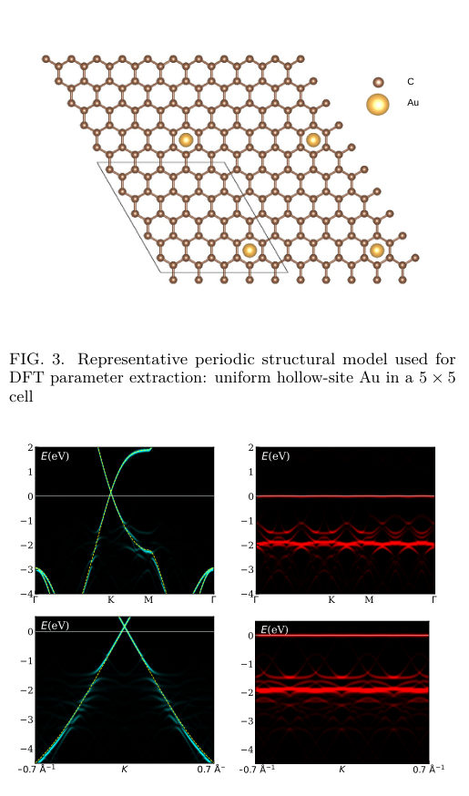
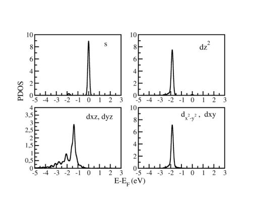
Summary. This work introduces an iterative method that combines DFT, Tight-Binding models, and the Self-Consistent T-matrix Approximation (SCTMA) to model intercalated graphene. By applying this to Au-intercalated graphene, the authors successfully reproduce key ARPES features like VHS broadening and kinks. This demonstrates a robust computational pathway for understanding how impurities modify electronic band structures in disordered 2D materials.
Why it may be interesting. The methodology represents a powerful example of combining multiple advanced computational techniques (DFT, Wannierization, T-matrix theory) into a single predictive framework for complex condensed matter systems, which is highly relevant for modeling engineered quantum materials.
Main problem. The primary goal is developing a general, iterative computational framework to accurately model the electronic structure of intercalated materials by bridging theoretical calculations (DFT/TB) with disorder averaging techniques and experimental ARPES data.
Main result. The method successfully reproduces key ARPES signatures for Au-intercalated graphene, identifying that hybridization between specific Au orbitals and graphene states, alongside a local scattering potential, are the essential microscopic ingredients governing band structure modification.
Method. A multi-step iterative approach is used: DFT determines initial parameters; Wannierization generates an effective Tight-Binding (TB) model; disorder averaging is performed using the Self-Consistent T-matrix Approximation (SCTMA); and finally, results are refined by comparison with ARPES measurements.
Model / system. The system studied is graphene intercalated with Au clusters. The theoretical framework involves an effective TB Hamiltonian incorporating hybridization terms ($\hat{H}_{ ext{hyb}}$) between the host $\pi$ bands and localized orbitals from the intercalant, alongside a local potential term ($U$).
Key observables. Angle-Resolved Photoemission Spectroscopy (ARPES) spectral function $A(\mathbf{k}, \omega)$, specifically observing the broadening of the van Hove singularity (VHS) and the emergence of kink-like features in the dispersion.
Important parameters / regimes. The analysis requires tuning parameters such as hybridization amplitudes ($|t_\alpha|$), the local potential strength ($U$), and the impurity density ($n_{ ext{imp}}$) to match experimental linewidths and energy shifts.
Assumptions / limitations. Key assumptions include neglecting substrate effects (SiC), assuming random/dilute distribution of intercalants (justifying SCTMA), and treating certain environmental interactions (like local potential $U$) phenomenologically rather than deriving them purely from DFT.
Figures summary. Figures illustrate the workflow, showing initial DFT dispersion plots, and final results comparing the calculated disorder-averaged spectral function via SCTMA against experimental ARPES data along high-symmetry paths ($\Gamma ext{K}\Gamma$).
Paper structure. The paper follows a logical progression: first establishing the need for an integrated method; second, detailing the DFT/Wannierization steps to build the initial TB model; third, implementing SCTMA to handle disorder averaging; and finally, applying this full pipeline to Au-graphene to extract physical parameters that match experimental observations.
Intercalation can strongly modify the electronic dispersion of a host material, as directly revealed by angle-resolved photoemission spectroscopy (ARPES). We develop a general iterative method combining density functional theory (DFT), tight-binding (TB), disorder averaging within the self-consistent T-matrix approximation (SCTMA), and experiment, to construct an effective model of the intercalated system. DFT identifies the relevant microscopic degrees of freedom and constrains selected model parameters, while comparison of SCTMA calculations with experiment guides their further refinement. We apply this method to graphene intercalated with Au clusters and show that it reproduces the main ARPES signatures of the Au-cluster phase, including the broadening of the V12an Hove singularity and the emergence of kink-like features in the dispersion. The essential microscopic ingredients identified by the analysis are the hybridization between selected intercalant orbitals and the graphene states, together with an intercalation-induced local scattering potential.
Authors: Phillip Nimphius, Nariya Uchida
Type: theory · Category: statistical mechanics · PDF: https://arxiv.org/pdf/2607.27791v1
Analysis basis: full PDF text, analyzed in chunks
Topic relevance: 🔥 non-equilibrium universality 4/5 · driven-dissipative phase transition 3/5 · non-equilibrium dynamics 3/5 · Frenkel-Kontorova 1/5 · Keldysh / 2PI / non-Gaussian methods 1/5 · correlated / nonlocal dissipation 1/5 · methods for driven-dissipative 1/5
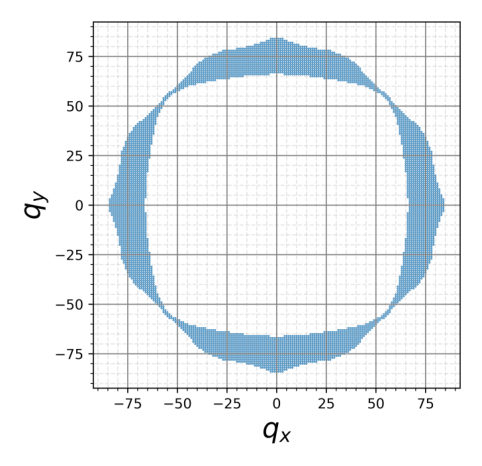
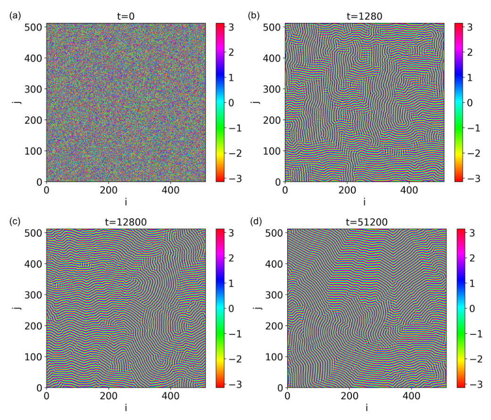
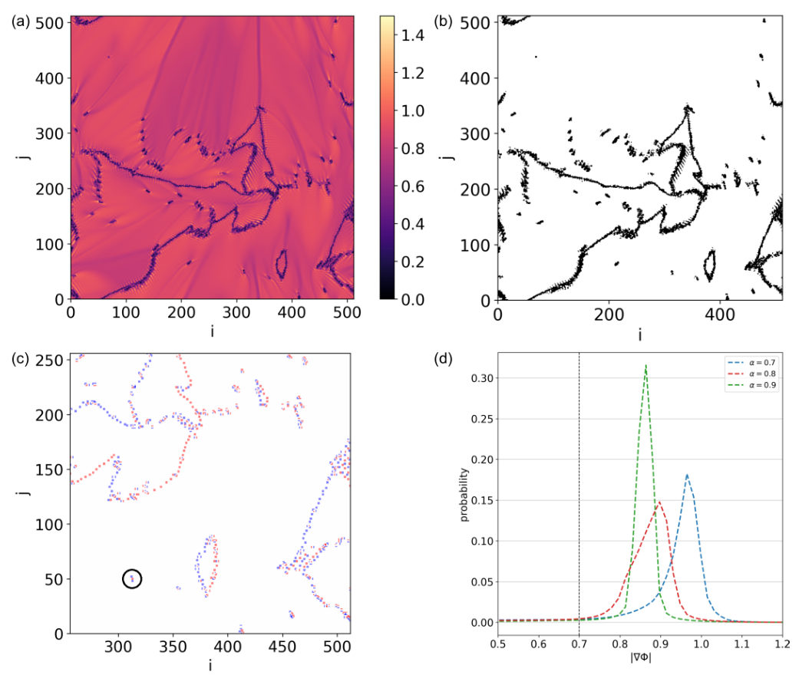
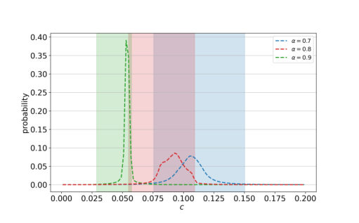
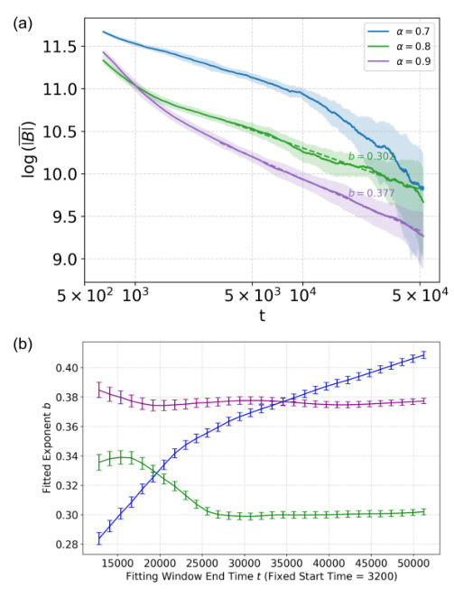
Summary. This paper analyzes wave patterns in 2D lattices of oscillators coupled non-locally with a tunable phase delay $\alpha$. It finds that the system undergoes distinct dynamic regimes: stable coarsening occurs for higher $\alpha$, while lower values induce domain splitting mediated by topological defects. The work uses LSA and numerical simulations to map out this transition based on the coupling parameter.
Why it may be interesting. The study models complex non-equilibrium pattern formation (coarsening/domain splitting) in a system exhibiting collective dynamics, which shares mathematical parallels with critical phenomena and phase transitions studied in statistical mechanics.
Main problem. The study investigates wave patterns, domain coarsening dynamics, and defect formation in a 2D lattice of non-locally coupled oscillators influenced by a phase delay parameter.
Main result. Coarsening (power-law decay of boundary size) is observed for specific phase delays ($\alpha \in [0.8, 1]$), while lower values ($\alpha=0.7$) exhibit qualitative changes marked by domain splitting and defect mediation.
Method. The research combines linear stability analysis (LSA) to study planar wave solutions with extensive numerical simulations of the coupled oscillator dynamics.
Model / system. The system is a square lattice of identical phase oscillators whose evolution is governed by a non-local coupling term dependent on the phase delay $\alpha$. The dynamics are analyzed in a rotating frame, simplifying the governing equation.
Key observables. Average total boundary size ($\overline{|B|}$), domain coarsening exponent ($b$), wave speed ($c$), and winding number (defect quantification).
Important parameters / regimes. The phase delay parameter $\alpha$, which controls the repulsive nature of the coupling, is critical; regimes are compared for $\alpha=0.7, 0.8,$ and $0.9$.
Assumptions / limitations. The analysis relies on approximating domain growth via power-law scaling ($|B|\propto t^{-b}$) and assumes the validity of planar traveling-wave solutions for LSA.
Figures summary. Figures illustrate snapshots showing wave domain emergence/coarsening (Fig. 2), time evolution of boundary size confirming power-law decay for high $\alpha$ (Fig. 4), and visualizations of defect structures using winding numbers (Fig. 3c).
Paper structure. The paper progresses from defining the physical model and governing equations, through applying LSA to characterize stable wave solutions, to presenting numerical simulations that track domain evolution and boundary size decay across different values of the phase delay $\alpha$.
We studied the wave patterns in non-locally, repulsively coupled oscillators on a 2D lattice. The repulsive coupling is tuned by the phase delay $απ$ and the wave patterns are found in the regime $α\in \left[0.5, 1\right]$. We focused on the growth of orientationally correlated domains and found that the average total boundary size $\overline{|B|}$ obeys an approximate power law $\overline{|B|}\propto t^{-b}$ for $α= 0.8$ and $α=0.9$. In contrast, at $α= 0.7$, the dynamics is disrupted by defect-mediated domain formation and domain splitting. The fitting-window dependence of the apparent exponent $b$, as well as the mean and standard deviation of the wave speed $c$, decreases with increasing $α$, which is consistent with the linear stability analysis of the wave solution.
Authors: Johann Drayne, Silvia Lüscher, Will Grant, Vahid Movahed, Tim Child, Saeed Fallahi, Geoffrey C. Gardner, Michael J. Manfra, Yaakov Kleeorin, Yigal Meir, Joshua Folk
Type: experiment · Category: strongly correlated electrons · PDF: https://arxiv.org/pdf/2607.27502v1
Analysis basis: full PDF text, analyzed in chunks
Topic relevance: 🔥 Kondo & dissipative impurity 4/5 · analog quantum simulation 1/5 · correlated / nonlocal dissipation 1/5 · driven-dissipative phase transition 1/5 · entanglement & information structure 1/5 · methods for driven-dissipative 1/5 · non-equilibrium dynamics 1/5
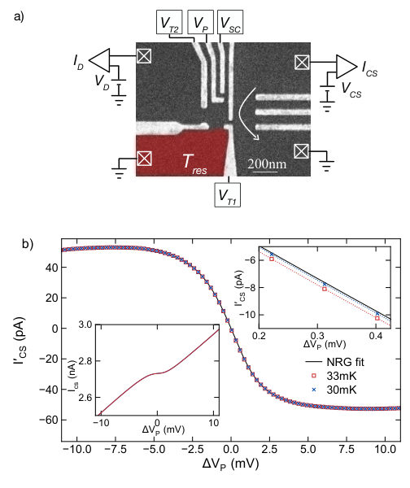
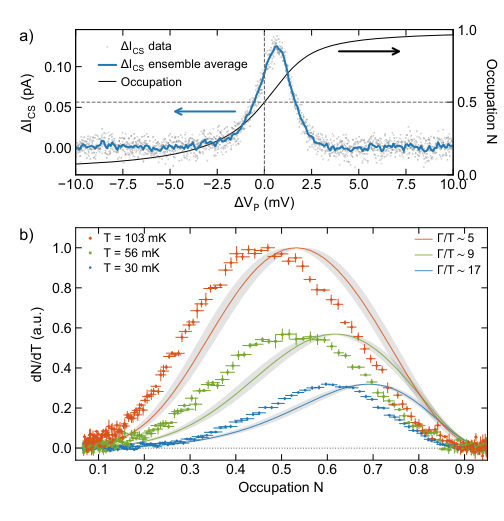
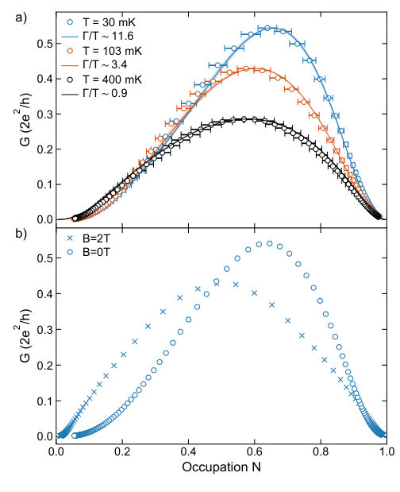
Summary. The authors report on the measurement of entropic signatures and conductance characteristics associated with the formation of the Kondo singlet state in a quantum dot. By analyzing temperature-dependent charge sensing and direct conductance measurements, they confirm the predicted asymmetric spectral features characteristic of Kondo screening. The quantitative agreement between these experimental results and NRG theory strongly validates the theoretical understanding of correlated electron physics in nanoscale devices.
Why it may be interesting. This work provides highly quantitative experimental verification of fundamental many-body physics (the Kondo effect) by measuring thermodynamic quantities like entropy, which is crucial for understanding quantum impurity models in mesoscopic systems.
Main problem. To measure the entropy suppression associated with the formation of the Kondo singlet state in a quantum dot.
Main result. The measured entropy signature ($dN/dT$) and conductance peak shift both exhibit an asymmetric lineshape peaking at $N>1/2$, which is confirmed by independent measurements and matches theoretical predictions from NRG calculations.
Method. Entropy change is extracted using a Maxwell relation applied to temperature-dependent charge sensing ($\Delta I_{CS} \propto dN/dT$), complemented by direct conductance ($G$) measurements.
Model / system. The system is a single impurity coupled to leads, realized in a GaAs quantum dot exhibiting Kondo screening below the characteristic temperature $T_K$. Theoretical modeling relies heavily on Numerical Renormalization Group (NRG) calculations.
Key observables. $dN/dT$ vs. occupation $N$; Conductance $G$ vs. occupation $N$; Zero-Bias Anomaly (ZBA) splitting in differential conductance ($dI/dV$).
Important parameters / regimes. Kondo temperature ($T_K$), Hybridization ($\Gamma$), Temperature ($T$), Occupation number ($N$).
Assumptions / limitations. The entropy measurement relies on the Maxwell relation, and parameter fitting requires assuming consistency between measurements derived from charge sensing and conductance.
Figures summary. Figures compare measured $dN/dT$ vs. $N$ (showing peak shift) and $G$ vs. $N$ against NRG theory across various temperatures; later figures show ZBA splitting in differential conductance as a function of magnetic field.
Paper structure. The paper systematically presents multiple measurements on the same system, first establishing the entropy signature ($dN/dT$), then providing independent confirmation using conductance ($G(N)$), and finally verifying results on a second device using both techniques alongside magnetic field dependence studies.
The Kondo singlet---a many-body state formed by entanglement between a localized spin and the Fermi sea---has been studied extensively through its transport signatures in quantum dots. Here we report a thermodynamic measurement of the entropy suppression associated with the formation of the Kondo singlet, using temperature-dependent charge sensing and a Maxwell relation to track the suppression of spin entropy as the first electron is added to a strongly-coupled GaAs quantum dot. Plotting $dN/dT$ against the simultaneously measured occupation $N$ reveals an asymmetric lineshape with its peak shifted to $N>1/2$---a hallmark of Kondo screening---that weakens with increasing temperature and is qualitatively reproduced by numerical renormalization group (NRG) calculations, with a small but persistent offset to lower occupation relative to the theory. An independent measurement of conductance versus occupation on the same device provides a test of these quantities through the mixed-valence crossover and matches NRG within experimental uncertainty.
Authors: Shinnosuke Tsutsumi, Koji Kudo, Kentaro Nomura
Type: theory · Category: strongly correlated electrons · PDF: https://arxiv.org/pdf/2607.27833v1
Analysis basis: full PDF text, analyzed in chunks
Topic relevance: 🔥 analog quantum simulation 4/5 · exotic spin models in light-matter 3/5 · entanglement & information structure 1/5 · spintronics-quantum-optics interface 1/5
Summary. This theoretical work demonstrates that Fractional Chern Insulator states can spontaneously emerge in kagome magnets due to noncoplanar magnetic ordering that generates scalar spin chirality. By analyzing the system's energy spectrum and topological invariants, the authors establish a clear pathway for realizing these exotic correlated electronic phases without external fields.
Why it may be interesting. While focused on condensed matter topology, the concept of emergent topological order driven purely by internal magnetic structure (chirality) is highly relevant to understanding correlated electron systems in engineered quantum materials.
Main problem. The work aims to demonstrate the emergence of Fractional Chern Insulator (FCI) states, which are lattice analogs of fractional quantum Hall states, without requiring an external magnetic field.
Main result. FCIs are shown to emerge in kagome magnets possessing noncoplanar magnetic order that induces a finite scalar spin chirality, stabilizing the state over a wide parameter range.
Method. The study uses theoretical modeling involving exact diagonalization of an effective Hamiltonian projected onto the lowest band, supplemented by overlap matrix calculations and spectral flow analysis.
Model / system. The system is a kagome lattice modeled with electron-electron interactions ($U, V$) and magnetic exchange coupling ($ ext{J}_{ ext{H}}$). The physics is driven by the induced scalar spin chirality ($ heta$).
Key observables. Overlap matrix $\mathcal{O}$ (close to unity), ground-state degeneracy (three-fold), finite energy gap, and spectral flow periodicity under flux insertion.
Important parameters / regimes. Scalar spin chirality ($ heta$), interaction strength ($V/t$), and the ratio of interactions to band dispersion.
Assumptions / limitations. The analysis utilizes approximations such as the strong exchange coupling limit ($ ext{J}_{ ext{H}} ext{S}/t ightarrow \infty$) and relies on flat-band limit states for defining the overlap matrix.
Figures summary. Figures illustrate band structures showing Chern numbers, map out the parameter region where FCI emerges via overlap analysis (red region), confirm three-fold degeneracy in energy spectra, and show period-tripling behavior in spectral flow calculations.
Paper structure. The paper progresses by defining the Hamiltonian, analyzing the emergence of topological features using overlap matrices ($\mathcal{O}$), confirming the state's robustness via finite size scaling, and finally characterizing the fractional nature through spectral flow analysis.
Fractional Chern insulators (FCIs) are the lattice analogs of the fractional quantum Hall states, emerging even without an external magnetic field. In this work, we demonstrate the emergence of the FCI states in a kagome magnet with a noncoplanar magnetic order that induces a finite scalar spin chirality. By incorporating in our model both electron-electron interactions and the effect of band dispersion, we find that stronger interactions relative to the band dispersion stabilize the FCI state over a broader range of scalar spin chirality. We characterize the emergent FCI state by calculating overlap with representative states, identifying the ground-state degeneracy and the finite energy gap in the thermodynamic limit, and tracking the spectral flow under multiple flux-quantum insertions. Our results suggest that kagome magnets with scalar spin chirality can be promising platforms for realizing FCIs.
Authors: Marta Cagetti, Stefan Forstner, Victor Champain, Roger Tormo-Queralt, Christoffer B. Møller, Sergio L. De Bonis, Chandan Samanta, Elsa Vázquez-Rodriguez, Eneko Mateos-Madinabeitia, David A. Czaplewski, Adrian Bachtold
Type: experiment · Category: quantum information and computing · PDF: https://arxiv.org/pdf/2607.28313v1
Analysis basis: full PDF text, analyzed in chunks
Topic relevance: 🔥 QC/QI experiment 4/5 · quantum measurements 2/5
Summary. The paper introduces a novel current-mode charge sensor based on an RLC resonant circuit implemented in a suspended carbon nanotube. This method overcomes limitations of previous techniques by avoiding impedance matching and suppressing low-frequency noise. It successfully measures the charge state of an embedded double quantum dot with high fidelity, advancing solid-state qubit readout technology.
Why it may be interesting. This work presents a highly engineered electrical measurement technique (RF resonance) applied directly to solid-state qubits (DQD in CNTs), which is central to realizing scalable quantum computing hardware.
Main problem. Developing ultra-sensitive charge detection methods for quantum electronics applications, which are crucial for quantum information processing.
Main result. The authors achieved a high charge sensitivity of $0.15 \mu ext{e}/\sqrt{ ext{Hz}}$ and demonstrated single-shot readout of a double quantum dot (DQD) with an SNR of 17, surpassing current state-of-the-art techniques.
Method. They introduced a novel current-mode charge sensor operating at the resonance of an RLC tank circuit to measure charge changes in a suspended carbon nanotube.
Model / system. The experiment utilizes a double quantum dot (DQD) electrostatically defined within a suspended carbon nanotube, which acts as the highly sensitive charge sensor coupled to an RF-resonant circuit.
Key observables. Charge stability diagram mapping ($\Delta V_{peak}$ vs. gate voltages), single-shot readout fidelity, and current noise spectral density.
Important parameters / regimes. Achieved charge sensitivity $\delta q \approx 0.15 \, \mu ext{e}/\sqrt{ ext{Hz}}$; Resonance frequency $f_{RLC} = 1.25 ext{ MHz}$; Integration time $ au = 3.56 \, \mu ext{s}$.
Assumptions / limitations. The sensor remains functional up to tens of Kelvin, although sensitivity decreases; the method relies on converting current measurement into voltage readout at resonance.
Figures summary. Figures illustrate SEM images of the CNT setup, schematics of the RLC circuit, Coulomb blockade peaks in conductance measurements, and frequency response curves demonstrating the resonant operation.
Paper structure. The paper first establishes the need for sensitive charge detection. It then details the current-mode RF sensing methodology using an RLC resonator to overcome limitations of previous techniques. Finally, it applies this sensor to map the DQD stability diagram and perform high-fidelity single-shot readout.
Ultra-sensitive charge detection is a widely used tool for quantum electronics with applications in quantum information processing and in probing the physics of condensed matter systems. Existing approaches require either an impedance-matched resonant circuit, or millimeter-scale proximity between amplifier and sample, both adding complexity and constraining device design. In this work, we introduce a current-mode charge sensor in a suspended carbon nanotube, operating at the $1.25$ MHz resonance of an RLC tank circuit and achieving a charge sensitivity of $0.15~μe/\sqrt{\mathrm{Hz}}$. We utilize it to measure a double quantum dot (DQD) electrostatically defined in the same nanotube, revealing a highly regular charge stability diagram. We perform single-shot readout of the DQD charge state at an integration time of $3.56~μ\mathrm{s}$, without any false assignments over $10^{7}$ measurements and a signal-to-noise ratio of 17 exceeding the state of the art.
Authors: A Kolli, Hugo Merbouche, Salvatore Perna, Claudio Serpico, Damien Rontani, Grégoire de Loubens
Type: theory · Category: other · PDF: https://arxiv.org/pdf/2607.27884v1
Analysis basis: full PDF text, analyzed in chunks
Topic relevance: methods for driven-dissipative 3/5 · spintronics-quantum-optics interface 3/5 · non-equilibrium dynamics 2/5 · non-equilibrium universality 2/5 · correlated / nonlocal dissipation 1/5 · driven-dissipative phase transition 1/5 · entanglement & information structure 1/5 · exotic spin models in light-matter 1/5
Summary. This paper analyzes the nonlinear dynamics of a magnetic nanodisk driven by FMR, demonstrating that the system can enter a hyperchaotic regime. The complexity is quantified and shown to scale with the number of active spin-wave modes. This establishes such nanoscale spintronic devices as potential sources for tunable entropy in information processing.
Why it may be interesting. While focused on classical micromagnetics, the rigorous application of chaos theory diagnostics (Lyapunov exponents, entropy) to a solid-state system provides a model for understanding non-equilibrium dynamics in condensed matter devices that can be relevant to quantum noise sources or energy dissipation studies.
Main problem. The study investigates the emergence of hyperchaotic dynamics within a magnetic nanodisk driven by ferromagnetic resonance (FMR) in its nonlinear regime.
Main result. The system was shown to exhibit hyperchaos, characterized by up to three positive Lyapunov exponents, with this complexity being directly linked to the number of participating quantized spin-wave modes.
Method. The research combines micromagnetic simulations solving the Landau-Lifshitz-Gilbert equation with advanced nonlinear time-series analysis techniques like Takens' delay embedding and calculation of the full Lyapunov spectrum.
Model / system. The physical system is an out-of-plane magnetized magnetic nanodisk (30 nm thick, 700 nm diameter) whose dynamics are governed by micromagnetics under external microwave driving fields.
Key observables. Lyapunov exponents ($\lambda_i$), Shannon participation number ($P_s$), variation coefficient ($c_v$), and the Kolmogorov-Sinai entropy rate ($h_{KS}$).
Important parameters / regimes. The control parameters are the static bias field ($B_z$) and the RF driving amplitude ($B_{ ext{rf}}$), which define distinct dynamical regimes.
Assumptions / limitations. The analysis assumes that the complex dynamics can be effectively mapped onto a low-dimensional strange attractor using mode projection techniques, despite underlying continuous wave scattering.
Figures summary. Figures illustrate temporal traces of magnetization components ($\Delta m_z$), maps showing chaos indicators ($c_v$, $P_s$) across the control plane, and reconstructed phase-space attractors for different operating points.
Paper structure. The paper progresses by establishing the physical model (LLG equation), mapping out the parameter space to identify transitions from periodic orbits to chaotic/hyperchaotic states, quantifying this complexity using multiple diagnostic tools, and finally discussing the implications for nanoscale information processing.
We investigate the chaotic dynamics driven in the nonlinear regime of ferromagnetic resonance of an out-of-plane magnetized nanodisk in detail. By combining extensive micromagnetic simulations with time-series analysis across the control parameter space, we map the topological transitions from stable periodic orbits to strange attractors and quantify the dynamical complexity. Despite the simplicity of our nanoscale system, we evidence that it can exhibit hyperchaotic dynamics with up to three positive Lyapunov exponents in vast regions of the control plane accessible to experimental studies. Using a mode projection technique, we unveil that the generated complexity is related to the number of quantized spin-wave modes participating in the dynamics. Our findings establish magnon-spintronic nanodevices as versatile entropy sources for unconventional processing of information.
Authors: Artem Litvinenko, Erbin Qiu, Sambit Ghosh, Juan Andres Hofer, Akash Kumar, Jong-Guk Choi, Ivan K. Schuller, Johan Åkerman
Type: experiment · Category: statistical mechanics · PDF: https://arxiv.org/pdf/2607.27447v1
Analysis basis: full PDF text, analyzed in chunks
Topic relevance: driven-dissipative phase transition 3/5 · non-equilibrium dynamics 2/5 · non-equilibrium universality 2/5 · Frenkel-Kontorova 1/5 · Keldysh / 2PI / non-Gaussian methods 1/5 · analog quantum simulation 1/5 · correlated / nonlocal dissipation 1/5 · methods for driven-dissipative 1/5 · quantum measurements 1/5 · spintronics-quantum-optics interface 1/5
Summary. This work thoroughly analyzes the phase noise limiting VO2-based relaxation oscillators, attributing much of the broadening to thermal fluctuations during the material's transition phase. The authors demonstrate that applying a sharp square-wave signal is superior to sinusoidal driving for stabilizing the oscillator. Furthermore, they establish a critical voltage threshold below which timing jitter increases dramatically due to changes in the underlying physical switching mechanism.
Why it may be interesting. The analysis of phase noise in a system driven by a first-order phase transition (metal-insulator) provides an excellent experimental platform for studying non-equilibrium dynamics and stochastic processes, which are relevant to open quantum systems modeling.
Main problem. The primary goal is analyzing and controlling the phase noise in VO2-based relaxation oscillators to improve their spectral linewidth, which is inherently broad due to thermal effects.
Main result. External synchronization using a square-wave signal significantly improves phase noise compared to sinusoidal injection locking. Furthermore, oscillator jitter dramatically increases as the supply voltage approaches a critical threshold voltage ($V_{IMT} \approx 1.79 ext{ V}$) because the incubation slope flattens.
Method. The study combines time-domain analysis (jitter histograms), phase noise spectral density measurements ($S_\phi$), and controlled synchronization experiments using both square and sine waves.
Model / system. The system is a VO2-based relaxation oscillator that operates via rapid, nonlinear phase transitions between insulating and metallic states. The dynamics are governed by charging an RC circuit across the VO2 film, which exhibits threshold voltage fluctuations.
Key observables. Phase Noise ($S_\phi$), Timing Jitter ($\sigma$), Linewidth, Incubation Voltage Slope, Synchronization Improvement Factor.
Important parameters / regimes. Low oscillation frequencies (where $1/f^3$ noise dominates), critical threshold voltage ($V_{IMT} \approx 1.79 ext{ V}$), and the difference between square-wave vs. sinusoidal driving signals.
Assumptions / limitations. The primary source of low-frequency noise is attributed to thermal fluctuations during the stochastic incubation phase preceding the Insulator-to-Metal Transition (IMT).
Figures summary. Figures show phase noise spectra exhibiting $1/f^3$ and $1/f^2$ slopes, jitter histograms showing broadening near low supply voltages, and comparisons demonstrating square-wave synchronization's superior noise suppression.
Paper structure. The paper systematically analyzes the spectral characteristics of the oscillator noise (identifying $1/f^3$, $1/f^2$, and white noise regimes). It then investigates how external driving signals can mitigate this noise, concluding with a detailed study linking jitter amplification to the flattening of the incubation voltage slope near the critical threshold.
VO$_2$-based relaxation oscillators form a rapidly developing field that finds applications in neuromorphic computing, Ising machines, and numerous signal processing concepts. These oscillators operate in a deeply nonlinear relaxation regime based on rapid phase transitions between insulating and metallic states in the VO$_2$ material. This process is governed by thermal effects, which lead to additional voltage fluctuations and contribute to a considerably wide spectral linewidth in the VO$_2$-based oscillator signal. In this work, we thoroughly study the phase noise in VO$_2$-based relaxation oscillators and demonstrate that the broadening of the generation spectrum linewidth at low oscillation frequencies is caused by an increased susceptibility to thermal fluctuations during the incubation phase. We explore the types of noise affecting oscillator stability and show that synchronization with an external square-wave signal improves the phase noise more effectively than a sinusoidal-shape injection locking signal.
Authors: Lan-Ting Shi, I-Te Lu, Xin Wang, Dongbin Shin, Lede Xian, Angel Rubio
Type: theory · Category: other · PDF: https://arxiv.org/pdf/2607.27769v1
Analysis basis: full PDF text, analyzed in chunks
Topic relevance: correlated cavity matter 3/5 · analog quantum simulation 2/5 · Keldysh / 2PI / non-Gaussian methods 1/5 · Tavis-Cummings & cavity-many-emitter 1/5 · driven-dissipative phase transition 1/5 · methods for driven-dissipative 1/5
Summary. The authors used QEDFT calculations on CsV3Sb5 to show that coupling the material to an optical cavity acts as a powerful tuning mechanism for competing electronic orders. By selectively softening CDW-related phonons, the cavity enhances electron-phonon coupling and boosts the superconducting critical temperature, establishing cavity quantum electrodynamics as a viable control route in strongly correlated materials.
Why it may be interesting. This work directly applies advanced quantum electrodynamics (QED) techniques to condensed matter physics, treating the cavity field as a controllable external perturbation that modifies fundamental material properties like lattice dynamics and superconductivity. This bridges AMO concepts into solid-state materials science.
Main problem. The study investigates how an external cavity field can tune the competition between Charge-Density-Wave (CDW) order and superconductivity in a Kagome metal.
Main result. Cavity coupling selectively softens CDW-related phonons, extending the instability to higher pressures and enhancing electron-phonon coupling ($\lambda$), thereby increasing the superconducting critical temperature ($T_c$).
Method. The research employs quantum electrodynamical density functional theory (QEDFT) to model cavity light-matter coupling effects on lattice dynamics.
Model / system. The physical system is the Kagome metal CsV3Sb5. The theoretical framework involves modeling the interaction between electronic structure, lattice vibrations (phonons), and an out-of-plane polarized single-mode optical cavity field.
Key observables. CDW soft phonon frequencies, total electron–phonon coupling ($ ext{EPC}$) strength ($\lambda$), Allen–Dynes estimate of $T_c$, and charge density redistribution ($\Delta ho$).
Important parameters / regimes. Hydrostatic pressure (tuning CDW instability) and dimensionless cavity coupling amplitude ($A_0$) are the primary tuning parameters.
Assumptions / limitations. The analysis tracks harmonic lattice instabilities, not the full finite-temperature anharmonic CDW transition line. The method relies on first-principles QEDFT calculations.
Figures summary. Figures illustrate how cavity coupling selectively softens specific phonon modes (counteracting pressure hardening) and maps the resulting charge redistribution ($\Delta ho$) which drives the enhancement of low-frequency EPC.
Paper structure. The paper establishes a theoretical framework using QEDFT to model cavity interaction, demonstrating that this interaction acts as an equilibrium tuning knob. It shows selective phonon softening first, followed by calculating the resultant enhancement in $ ext{EPC}$ and $T_c$ due to charge redistribution.
Kagome metals host competing electronic orders, including charge-density-wave (CDW) order and superconductivity, shaped by intertwined lattice, electronic-correlation, and kagome-geometric effects. Here, using quantum electrodynamical density functional theory, we identify an equilibrium cavity route for reshaping this balance in the kagome metal CsV$_3$Sb$_5$. An out-of-plane polarized single-mode cavity selectively softens CDW-related phonons, counteracting pressure-induced hardening and extending the CDW instability toward higher pressures. In the high-pressure regime where the CDW instability is otherwise suppressed, cavity coupling redistributes Eliashberg spectral weight toward lower frequencies, enhances the total electron--phonon coupling (EPC), and increases the EPC-based Allen--Dynes estimate of $T_c$. This response originates from a charge-density redistribution induced by the out-of-plane photon mode, which modifies lattice restoring forces and drives the phonon and EPC renormalization. These results establish cavity quantum electrodynamics as a viable equilibrium route for tuning intertwined charge order, lattice dynamics, and superconductivity in kagome materials.
Authors: Jonas Mensing, Wilfred G. van der Wiel, Andreas Heuer
Type: theory · Category: disordered systems and neural networks · PDF: https://arxiv.org/pdf/2607.27844v1
Analysis basis: full PDF text, analyzed in chunks
Topic relevance: non-equilibrium dynamics 3/5 · driven-dissipative phase transition 2/5 · Kondo & dissipative impurity 1/5 · correlated / nonlocal dissipation 1/5 · methods for driven-dissipative 1/5 · non-equilibrium universality 1/5
Summary. This paper proposes a novel neuromorphic computing architecture using nanoparticle networks whose behavior is controlled by external electrodes. The authors derive three critical design rules—related to operating frequency, substrate thickness, and structural disorder—to maximize computational performance. This work bridges condensed matter physics concepts like electrostatic screening and charge trapping with the requirements of artificial intelligence hardware.
Why it may be interesting. It models complex non-equilibrium dynamics in a solid-state system where charge trapping and local disorder dictate macroscopic computational function, linking concepts from disordered systems (localization/glasses) to artificial intelligence hardware.
Main problem. The work addresses the energy efficiency bottleneck of von Neumann computing by proposing a physical, tunable neuromorphic architecture.
Main result. Three core design rules are established for maximizing computational performance: operating near cutoff frequency, controlling memory via oxide thickness/screening length, and using disorder to bypass expressivity saturation limits.
Method. Theoretical and numerical analysis combining electrostatic modeling (Poisson equation solutions) with stochastic charge transport simulations (Kinetic Monte Carlo).
Model / system. The system is a network of metallic nanoparticles interconnected by molecular junctions on a SiO2/Si substrate, whose dynamics are governed by capacitive coupling and single-electron tunneling.
Key observables. Total time-dependent output current I(t), Paired Pulse Ratio (PPR) for memory characterization, and the 'phase-aware effective volume' metric for expressivity.
Important parameters / regimes. SiO2 thickness (setting screening length $\Lambda$), structural disorder level, and operating frequency relative to cutoff frequency.
Assumptions / limitations. The total current is treated as a superposition of resistive tunneling and capacitive displacement currents; approximations are made regarding nearest-neighbor coupling dominance.
Figures summary. Figures illustrate circuit schematics, spatial screening decay (exponential), memory contrast between fading/non-volatile regimes, and the time evolution of potentials showing trapped charge islands.
Paper structure. The paper progresses from establishing the physical platform and energy cost problem to deriving three key design rules based on analyzing electrostatic coupling, memory retention via PPR, and overcoming expressivity limits using disorder.
Physical computing leverages complex dynamical systems for energy-efficient data processing. In this work, we present a neuromorphic architecture based on metallic nanoparticles interconnected by molecular junctions on a $\text{SiO}_2$/Si substrate. We demonstrate that surrounding static control electrodes transform this nanoparticle network from a passive reservoir into a tunable nonlinear dynamical system. By analyzing how these electrodes route simple one-dimensional voltage inputs into multidimensional signal responses, we establish three core design rules to maximize computational performance. First, operating near the system's cutoff frequency achieves an optimal balance between nonlinear charge tunneling and linear capacitive memory. Second, tuning the underlying $\text{SiO}_2$ thickness sets the electrostatic screening length and dictates the memory type. Thick oxide layers reduce the screening length, causing networks larger than this length to transition into a persistent, non-volatile-like regime. Conversely, networks smaller than the screening length exhibit only fading memory. Third, introducing structural disorder via heterogeneous molecular junctions overcomes inherent limits on expressivity. While a network's computational expressivity scales with its physical size, it is ultimately capped by the screening length. Breaking internal spatial symmetries with localized disorder bypasses this saturation, allowing control voltages to independently manipulate specific signal amplitudes and phases, universally maximizing performance for dynamic neuromorphic applications.
Authors: Yuezhao Li, Guo Chuan Thiang
Type: theory · Category: other · PDF: https://arxiv.org/pdf/2607.28181v1
Analysis basis: full PDF text, analyzed in chunks
Topic relevance: analog quantum simulation 3/5 · Keldysh / 2PI / non-Gaussian methods 1/5 · correlated / nonlocal dissipation 1/5 · driven-dissipative phase transition 1/5 · entanglement & information structure 1/5
Summary. This work develops a rigorous mathematical theory to classify topological phases by analyzing how symmetry breaking affects the index of Dirac-type operators. It introduces a weak/strong dichotomy for these indices, generalizing concepts from solid-state physics into abstract settings involving group $C^*$-algebras and coarse geometry.
Why it may be interesting. While highly abstract, the connection between topological invariants derived from spectral theory (like those in condensed matter) and deep algebraic structures like K-theory and group $C^*$-algebras provides powerful mathematical tools for classifying quantum phases of matter.
Main problem. The paper establishes a general mathematical framework for defining topological invariants (indices) that remain consistent under symmetry breaking, particularly in settings involving proper metric spaces and discrete group actions.
Main result. It develops a canonical weak/strong dichotomy for equivariant indices and relates these abstract algebraic structures to macroscopic or coarse-geometric indices derived from the system's underlying geometry.
Method. The methodology combines advanced concepts from K-theory, index theory (specifically involving Dirac-type operators), and coarse geometry applied to $C^*$-algebras associated with group actions.
Model / system. The theoretical framework is motivated by solid-state physics models like topological insulators, where Hamiltonians are $\Gamma$-invariant Schrödinger or Dirac operators on a space $X$ acted upon by a discrete group $\Gamma$.
Key observables. Equivariant indices ($ ext{ind}_\Gamma(/D)$) and the resulting weak/strong K-theory classes that characterize topological phases.
Important parameters / regimes. The structure of the symmetry group $\Gamma$ (e.g., abelian lattices $\mathbb{Z}^d$) and the nature of the space $X$.
Assumptions / limitations. Requires $X$ to be a proper metric space with a proper, cocompact action of $\Gamma$, and relies on constructing specific Roe algebras associated with this geometry.
Figures summary. Figure 1.1 illustrates 'coarse-graining' by showing how an orbit under $\mathbb{Z}_2$ is lumped together in a coarse-grained fundamental domain when symmetry is broken to $2\mathbb{Z}_2$.
Paper structure. The paper builds from defining the index for operators invariant under symmetries, formalizing symmetry breaking via finite-index subgroups and associated colimits, establishing the weak/strong dichotomy, and relating this structure to coarse-geometric indices.
Operators invariant under a symmetry group are also invariant under any finite-index subgroup. The equivariant indices of such operators must be consistent under symmetry breaking. We use this principle to establish a canonical weak/strong dichotomy for equivariant indices, building on an idea originating in the theory of topological insulators in solid-state physics. We also study the relationship to coarse-geometric, or macroscopic, indices.
Authors: Wenderson R. F. Silva, Robson C. O. Guedes, Gilberto Rodrigues-Junior, Eduarda P. M. Campos, Angelo Malachias, Joaquim B. S. Mendes
Type: experiment · Category: other · PDF: https://arxiv.org/pdf/2607.27399v1
Analysis basis: full PDF text, analyzed in chunks
Topic relevance: spintronics-quantum-optics interface 3/5 · correlated / nonlocal dissipation 1/5 · driven-dissipative phase transition 1/5 · exotic spin models in light-matter 1/5 · methods for driven-dissipative 1/5
Summary. This work develops a novel, highly sensitive wireless humidity sensor by coating magnetoelastic resonators with PEDOT:PSS. The sensing mechanism exploits the dual effect of water adsorption causing both mass loading and viscoelastic damping within the polymer film. Characterization confirms that structural changes in the polymer directly translate into measurable resonance frequency shifts, achieving state-of-the-art sensitivity.
Why it may be interesting. While not directly related to fundamental quantum dynamics, the study involves characterizing material changes (swelling, polymer mobility) at interfaces under environmental stimuli, which touches upon concepts relevant to open quantum systems or complex condensed matter interactions.
Main problem. Developing highly sensitive, wireless sensors for monitoring relative humidity (RH) in challenging environments.
Main result. The optimized PEDOT:PSS coated magnetoelastic sensor achieved a high sensitivity of 155 Hz/% RH in the 20-70% RH range, demonstrating a low-cost platform for environmental monitoring.
Method. The study involved fabricating sensors by depositing PEDOT:PSS films onto Metglas resonators and measuring their resonance frequency shift while controlling ambient relative humidity.
Model / system. The physical system is a magnetoelastic (ME) resonator functionalized with a conductive polymer coating (PEDOT:PSS). The sensing mechanism relies on the combined effects of mass loading (Sauerbrey effect) and viscoelastic damping caused by water adsorption into the polymer matrix.
Key observables. Resonance frequency shift ($\Delta f$), sensitivity ($155 ext{ Hz/\%\ RH}$), resolution ($<0.1\% ext{RH}$), surface potential (KPFM), and XRD lamellar spacing change (23.5 Å to 24.2 Å).
Important parameters / regimes. Relative Humidity (RH) range (20-70% RH optimal), coating thickness ($0.5 \mu ext{L}/ ext{mm}^2$), and temperature/annealing conditions.
Assumptions / limitations. The resonance shift is modeled by combining the Sauerbrey equation for mass loading with viscoelastic damping effects, though the latter requires complex shear modulus considerations beyond simple approximations.
Figures summary. Figures illustrate the drop-casting process (Fig. 1), the measurement setup using a VNA in a controlled chamber (Fig. 2), and comparative data showing surface morphology (AFM/KPFM) and structural changes (XRD) across varying RH levels.
Paper structure. The paper follows a structure of problem definition $ ightarrow$ material functionalization (PEDOT:PSS deposition) $ ightarrow$ comprehensive characterization (structural, morphological, electronic) $ ightarrow$ measurement of the frequency response to controlled humidity cycles $ ightarrow$ quantitative analysis of sensitivity and performance metrics.
Magnetoelastic (ME) resonators provide an attractive platform for passive and wireless sensing, particularly for monitoring relative humidity (RH) in sealed or hard-to-access environments. In this work, we introduce ME humidity sensors functionalized with poly(3,4-ethylenedioxythiophene) sulfonate (PEDOT), marking the first application of this conductive polymer in ME-based humidity sensing. PEDOT films were deposited onto Metglas resonators via a simple drop-casting process, producing uniform and mechanically stable coatings. Comprehensive structural and morphological characterization by SEM, EDX, Raman spectroscopy, AFM/KPFM, and XRD confirmed the structural integrity of the polymer and revealed humidity-induced swelling of the PSS-rich domains, accompanied by enhanced polymer-chain mobility and an increase in the lamellar spacing from 23.5 Å to 24.2 Å at 95% RH. These structural changes directly affected the dynamic response of the resonators, leading to a systematic resonance-frequency downshift driven by the combined effects of water adsorption, mass loading, and viscoelastic damping. The optimized device achieved a sensitivity of 155 Hz/% RH in the 20 - 70% RH range, outperforming previously reported ME humidity sensors, while exhibiting a resolution better than 0.1% RH together with excellent response and recovery times. These results establish PEDOT as a highly effective functional coating for magnetoelastic humidity sensors and demonstrate a simple, low-cost, wireless sensing platform with high sensitivity and strong potential for practical environmental and industrial monitoring applications.
← Index · ← Previous · Next →